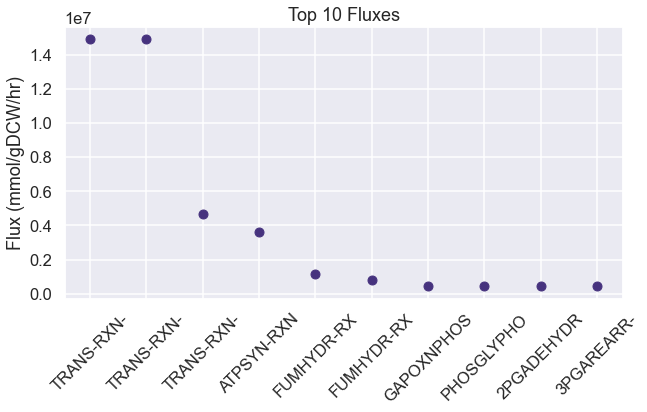
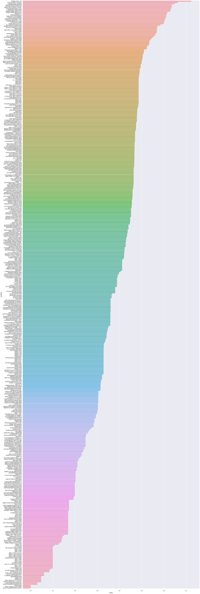

[1]:
import numpy as np
import seaborn as sns
import pandas as pd
import os
import matplotlib.pyplot as plt
import dill
import requests
import xmltodict
import cvxpy as cp
import itertools
from scipy.special import logsumexp
sns.set(style='darkgrid', palette='viridis', context='talk')
os.chdir(os.path.expanduser('~/vivarium-ecoli'))
from ecoli.processes.metabolism_redux import NetworkFlowModel, FlowResult
Import simulation output
Before running this, run a sim in ecoli/experiments/metabolism_redux_sim.py with -n 2 to generate a simulation output. This is necessary to replicate the simulation environment. Use the default .json config.
[2]:
time = '10'
date = '2023-04-14'
experiment = 'fba-redux-standard'
entry = f'{experiment}_{time}_{date}'
folder = f'out/fbagd/{entry}/'
[3]:
output = np.load(folder + 'output.npy',allow_pickle='TRUE').item()
# output = np.load(r"out/geneRxnVerifData/output_glc.npy", allow_pickle=True, encoding='ASCII').tolist()
output = output['agents']['0']
fba = output['listeners']['fba_results']
mass = output['listeners']['mass']
bulk = pd.DataFrame(output['bulk'])
[4]:
f = open(folder + 'agent_steps.pkl', 'rb')
agent = dill.load(f)
f.close()
[5]:
stoichiometry = agent['ecoli-metabolism'].model.stoichiometry
maintenance_reaction = agent['ecoli-metabolism'].model.maintenance_reaction
stoichiometry["maintenance_reaction"] = maintenance_reaction
bad_rxns = ["RXN-12440", "TRANS-RXN-121", "TRANS-RXN-300", "TRANS-RXN-8", "R15-RXN-MET/CPD-479//CPD-479/MET.25."]
# generate carbon mistake in parca, efflux/influx proton gen, iron cheating, mass gen
for rxn in bad_rxns:
stoichiometry.pop(rxn, None)
Pandas automatically understands dicts of dicts as matrices.
[6]:
sim_fluxes = pd.DataFrame(fba["estimated_fluxes"])
sim_fluxes = pd.DataFrame(sim_fluxes.loc[4, :].abs().sort_values(ascending=False))
sim_fluxes.head(10)
# plot the top 10 fluxes from sim_fluxes as a bar plot.
plt.figure(figsize=(10, 5))
plt.plot(sim_fluxes.head(10), 'o')
# shorten all xtick names to 10 characters
plt.xticks([i for i in range(10)], [i[:10] for i in sim_fluxes.index[:10]], rotation=45)
plt.ylabel('Flux (mmol/gDCW/hr)')
plt.title('Top 10 Fluxes')
plt.show()

Test changing nutrient composition
[7]:
uptake = (fba["unconstrained_molecules"][3]).copy()
uptake_c = fba["constrained_molecules"]
uptake.extend(list(uptake_c.keys()))
uptake = set(uptake)
# addition = set(["CPD0-1074[c]"])
addition = set([
"FRU[p]",
# "NITRATE[p]"
# 'THIAMINE[p]',
# 'HYDROGEN-MOLECULE[p]',
# 'FUM[p]'
])
removals = set([
"GLC[p]",
# # 'AMMONIUM[c]',
# # 'WATER[p]'
# # 'Pi[p]',
# # 'SULFATE[p]'
# 'OXYGEN-MOLECULE[p]'
])
uptake = uptake | addition
uptake = uptake - removals
uptake
[7]:
{'AMMONIUM[c]',
'CA+2[p]',
'CARBON-DIOXIDE[p]',
'CL-[p]',
'CO+2[p]',
'FE+2[p]',
'FRU[p]',
'K+[p]',
'L-SELENOCYSTEINE[c]',
'MG+2[p]',
'MN+2[p]',
'NA+[p]',
'NI+2[p]',
'OXYGEN-MOLECULE[p]',
'Pi[p]',
'SULFATE[p]',
'WATER[p]',
'ZN+2[p]'}
Use NetworkFlowModel class to run model
[8]:
homeostatic = pd.DataFrame(fba["target_homeostatic_dmdt"]).loc[4, :]
exchanges = pd.DataFrame(fba["estimated_exchange_dmdt"]).loc[4, :]
maintenance = pd.DataFrame(fba["target_maintenance_flux"]).at[4, 0]
kinetic = pd.DataFrame(fba["target_kinetic_fluxes"]).loc[4, :]
homeostatic
[8]:
2-3-DIHYDROXYBENZOATE[c] 73
2-KETOGLUTARATE[c] 187
2-PG[c] 49
2K-4CH3-PENTANOATE[c] 72
4-AMINO-BUTYRATE[c] 161
...
WATER[c] 22086088
XYLULOSE-5-PHOSPHATE[c] 89
ZN+2[c] 89
ZN+2[p] 53
glycogen-monomer[c] 35110
Name: 4, Length: 172, dtype: int64
[9]:
model = NetworkFlowModel(reactions=stoichiometry, homeostatic_metabolites=list(dict(homeostatic).keys()))
[10]:
model.set_up_exchanges(exchanges=list(dict(exchanges).keys()), uptakes=uptake)
[11]:
solution: FlowResult = model.solve(homeostatic_targets=dict(homeostatic),
maintenance_target=maintenance,
kinetic_targets=dict(kinetic),
binary_kinetic_targets={},
objective_weights={'secretion': 0.001, 'efficiency': 0.00001, 'kinetics': 0.000001},
upper_flux_bound=100000000)
[12]:
pd.Series(solution.exchanges).sort_values(ascending=False).head(10)
[12]:
WATER[p] 1.736816e+07
FRU[p] 1.410108e+06
AMMONIUM[c] 1.375859e+06
OXYGEN-MOLECULE[p] 1.289748e+06
Pi[p] 1.776750e+05
K+[p] 5.145700e+04
SULFATE[p] 3.335100e+04
MG+2[p] 2.287000e+03
FE+2[p] 1.930000e+03
CA+2[p] 1.425000e+03
dtype: float64
[13]:
pd.Series(solution.velocities).sort_values(ascending=False).head(10)
[13]:
TRANS-RXN-145 1.736816e+07
ATPSYN-RXN (reverse) 4.181745e+06
maintenance_reaction 3.058992e+06
GAPOXNPHOSPHN-RXN 2.307510e+06
PHOSGLYPHOS-RXN (reverse) 2.307502e+06
NADH-DEHYDROG-A-RXN-NADH/UBIQUINONE-8/PROTON//NAD/CPD-9956/PROTON.46. 2.223745e+06
3PGAREARR-RXN (reverse) 2.083406e+06
2PGADEHYDRAT-RXN 2.083357e+06
TRANS-RXN0-545[CCO-PM-BAC-NEG]-CARBON-DIOXIDE//CARBON-DIOXIDE.47. (reverse) 1.893273e+06
TRANS-RXN0-582-FRU/PTSI-PHOSPHORYLATED//FRU1P/PTSI-MONOMER.44. 1.410108e+06
dtype: float64
Filter S matrix to only include nonzero fluxes.
[14]:
# only include nonzero fluxes in solution.velocities
nonzero_velocities = {k: v for k, v in solution.velocities.items() if v != 0}
[15]:
# Use nonzero_velocities to filter S matrix
S_matrix = model.Sd.loc[:, nonzero_velocities.keys()]
# remove rows of S_used that sum to zero.
S_matrix = S_matrix.loc[(S_matrix != 0).any(axis=1)]
[16]:
nonzero_velocities
[16]:
{'1.5.1.20-RXN-5-METHYL-THF/NAD//METHYLENE-THF/NADH/PROTON.44. (reverse)': 3851.0,
'1.5.1.20-RXN-CPD-1302/NAD//CPD-12996/NADH/PROTON.36. (reverse)': 16094.999999999989,
'1PFRUCTPHOSN-RXN': 1238117.9886565725,
'1TRANSKETO-RXN (reverse)': 7974.0,
'2-DEHYDROPANTOATE-REDUCT-RXN (reverse)': 1131.0000000000043,
'2-ISOPROPYLMALATESYN-RXN': 56297.00000000001,
'2-OCTAPRENYL-6-METHOXYPHENOL-HYDROX-RXN': 300.0,
'2-OCTAPRENYL-6-OHPHENOL-METHY-RXN': 300.0,
'2-OCTAPRENYL-METHOXY-BENZOQ-METH-RXN': 300.0,
'2-OCTAPRENYLPHENOL-HYDROX-RXN': 300.0,
'2.3.1.157-RXN': 16505.000000000004,
'2.5.1.19-RXN': 50577.000000000044,
'2.5.1.64-RXN': 105.99999999999997,
'2.7.1.148-RXN': 47391.00000000001,
'2.7.7.60-RXN': 47391.00000000001,
'2.8.1.6-RXN': 10.0,
'2OXOGLUTARATEDEH-RXN': 248858.97731314733,
'2PGADEHYDRAT-RXN': 2083356.9773131476,
'2TRANSKETO-RXN (reverse)': 50658.00000000006,
'3-CH3-2-OXOBUTANOATE-OH-CH3-XFER-RXN-CPD-12996/2-KETO-ISOVALERATE/WATER//2-DEHYDROPANTOATE/CPD-1301.63.': 1131.0000000000043,
'3-DEHYDROQUINATE-DEHYDRATASE-RXN': 50584.00000000005,
'3-DEHYDROQUINATE-SYNTHASE-RXN': 50584.000000000044,
'3-OCTAPRENYL-4-OHBENZOATE-DECARBOX-RXN': 300.0,
'3.2.2.10-RXN-CMP/WATER//RIBOSE-5P/CYTOSINE.30.': 4.0,
'3.2.2.10-RXN-UMP/WATER//RIBOSE-5P/URACIL.28.': 1967.9999999999993,
'325-BISPHOSPHATE-NUCLEOTIDASE-RXN': 30709.0,
'3PGAREARR-RXN (reverse)': 2083405.9773131479,
'4OHBENZOATE-OCTAPRENYLTRANSFER-RXN': 300.0,
'5.1.3.20-RXN': 7772.0,
'5.4.2.10-RXN-CPD-13469//GLUCOSAMINE-1P.26.': 16505.0,
'6PGLUCONOLACT-RXN': 75194.99999999818,
'ACECOATRANS-RXN-PROPIONYL-COA/ACET//PROPIONATE/ACETYL-COA.42.': 83124.0,
'ACETATEKIN-RXN': 568.0,
'ACETOLACTREDUCTOISOM-RXN (reverse)': 111927.99999999999,
'ACETOLACTSYN-RXN': 90265.99999999997,
'ACETOOHBUTREDUCTOISOM-RXN (reverse)': 39206.99999999999,
'ACETOOHBUTSYN-RXN': 39206.99999999999,
'ACETYL-COA-ACETYLTRANSFER-RXN': 10.0,
'ACETYLGLUTKIN-RXN': 46480.0,
'ACETYLORNDEACET-RXN': 46458.00000000001,
'ACETYLORNTRANSAM-RXN (reverse)': 46480.0,
'ACONITATEDEHYDR-RXN': 6.999999999999999,
'ACSERLY-RXN': 33347.99999999999,
'ADCLY-RXN': 99.0000000000191,
'ADENOSYLHOMOCYSTEINE-NUCLEOSIDASE-RXN': 1070.9999999999998,
'ADENPRIBOSYLTRAN-RXN (reverse)': 2823.0,
'ADENYL-KIN-RXN': 277347.9999999965,
'ADENYLOSUCCINATE-SYNTHASE-RXN': 36221.99999999829,
'ADENYLYLSULFKIN-RXN': 33348.00000000001,
'ADOMET-DMK-METHYLTRANSFER-RXN': 53.0,
'AICARSYN-RXN': 43908.99999999832,
'AICARTRANSFORM-RXN-10-FORMYL-THF/AICAR//THF/PHOSPHORIBOSYL-FORMAMIDO-CARBOXAMIDE.62.': 57150.99999999831,
'AIRS-RXN': 43957.99999999832,
'ALANINE-AMINOTRANSFERASE-RXN (reverse)': 81414.99999999999,
'ALARACECAT-RXN': 4789.999999999999,
'AMPSYN-RXN': 36221.99999999829,
'ANTHRANSYN-RXN': 6468.0,
'ARGSUCCINLYA-RXN': 36239.0,
'ARGSUCCINSYN-RXN': 36332.0,
'ASNSYNA-RXN': 29512.999999999996,
'ASPAMINOTRANS-RXN': 128030.97731314946,
'ASPARTASE-RXN (reverse)': 427027.9773131456,
'ASPARTATE-SEMIALDEHYDE-DEHYDROGENASE-RXN (reverse)': 67322.99999999997,
'ASPARTATEKIN-RXN': 43983.999999999985,
'ASPCARBTRANS-RXN': 42405.999999999985,
'ASPDECARBOX-RXN': 1131.0000000000043,
'ATPPHOSPHORIBOSYLTRANS-RXN (reverse)': 13242.0,
'ATPSYN-RXN (reverse)': 4181744.9891011873,
'BRANCHED-CHAINAMINOTRANSFERILEU-RXN (reverse)': 39207.0,
'BRANCHED-CHAINAMINOTRANSFERLEU-RXN (reverse)': 56224.99999999999,
'BRANCHED-CHAINAMINOTRANSFERVAL-RXN (reverse)': 54499.99999999999,
'CARDIOLIPSYN-RXN-CPD-8260//CPD-12824/GLYCEROL.29.': 1486.0,
'CDPDIGLYSYN-RXN-CTP/CPD0-1422/PROTON//CPD-12815/PPI.36.': 30629.0,
'CDPKIN-RXN': 90768.0,
'CHORISMATE-SYNTHASE-RXN': 50577.000000000044,
'CHORPYRLY-RXN': 326.99999999999994,
'CITSYN-RXN': 482742.9773131492,
'CPM-KDOSYNTH-RXN': 3886.0,
'CYSTATHIONINE-BETA-LYASE-RXN': 19070.999999999993,
'D-PPENTOMUT-RXN (reverse)': 1970.9999999999993,
'DAPASYN-RXN': 10.0,
'DEOXYADENPHOSPHOR-RXN (reverse)': 2.0,
'DEOXYGUANPHOSPHOR-RXN (reverse)': 1.0,
'DEOXYRIBOSE-P-ALD-RXN (reverse)': 2130.9999999999995,
'DEPHOSPHOCOAKIN-RXN': 1107.0000000000043,
'DETHIOBIOTIN-SYN-RXN': 10.0,
'DHBDEHYD-RXN': 234.99999999999997,
'DHHB-METHYLTRANSFER-RXN': 300.0,
'DIAMINOPIMDECARB-RXN': 44068.0,
'DIAMINOPIMEPIM-RXN': 48067.99999999999,
'DIHYDRODIPICSYN-RXN': 48126.0,
'DIHYDROFOLATESYNTH-RXN': 99.0000000000191,
'DIHYDRONEOPTERIN-MONO-P-DEPHOS-RXN': 99.0000000000191,
'DIHYDROOROT-RXN (reverse)': 42092.999999999985,
'DIHYDROOROTATE-DEHYDROGENASE-RXN-DI-H-OROTATE/UBIQUINONE-8//OROTATE/CPD-9956.44.': 41058.999999999985,
'DIHYDROXYISOVALDEHYDRAT-RXN': 111927.99999999999,
'DIHYDROXYMETVALDEHYDRAT-RXN': 39206.99999999999,
'DIMETHUROPORDEHYDROG-RXN': 54.00000000000001,
'DIOHBUTANONEPSYN-RXN': 258.0,
'DMK-RXN': 105.99999999999997,
'DTDPKIN-RXN': 2455.9999999999995,
'DTMPKI-RXN': 2655.9999999999995,
'DURIDKI-RXN': 1967.9999999999995,
'DXPREDISOM-RXN (reverse)': 47391.00000000001,
'DXS-RXN': 47489.00000000001,
'ENTMULTI-RXN': 54.00000000000001,
'ERYTH4PDEHYDROG-RXN': 48.99999999999999,
'ERYTHRON4PDEHYDROG-RXN': 48.99999999999999,
'FADSYN-RXN': 91.0,
'FGAMSYN-RXN': 43957.99999999832,
'FPPSYN-RXN': 4419.000000000001,
'FRUCTOKINASE-RXN': 171989.99999999825,
'GAPOXNPHOSPHN-RXN': 2307509.9773131446,
'GART-RXN-10-FORMYL-THF/5-PHOSPHO-RIBOSYL-GLYCINEAMIDE//THF/5-P-RIBOSYL-N-FORMYLGLYCINEAMIDE/PROTON.90.': 43957.99999999832,
'GDPKIN-RXN': 65152.99999999831,
'GDPPYPHOSKIN-RXN': 24.999999999999996,
'GLU6PDEHYDROG-RXN-GLC-6-P/NADP//D-6-P-GLUCONO-DELTA-LACTONE/NADPH/PROTON.55.': 75194.99999999817,
'GLUC1PADENYLTRANS-RXN': 35111.0,
'GLUC1PURIDYLTRANS-RXN': 9401.0,
'GLUCOSAMINE-6-P-DEAMIN-RXN (reverse)': 17117.0,
'GLUTAMINESYN-RXN': 122975.99999999665,
'GLUTATHIONE-SYN-RXN': 7682.0,
'GLUTCYSLIG-RXN': 7682.0,
'GLUTDEHYD-RXN (reverse)': 708489.0226868491,
'GLUTKIN-RXN': 25565.0,
'GLUTRACE-RXN': 3999.9999999999995,
'GLUTRNAREDUCT-RXN (reverse)': 864.0000000000003,
'GLUTSEMIALDEHYDROG-RXN (reverse)': 25565.0,
'GLYC3PDEHYDROGBIOSYN-RXN-GLYCEROL-3P/NAD//DIHYDROXY-ACETONE-PHOSPHATE/NADH/PROTON.57. (reverse)': 39046.00000000001,
'GLYCDEH-RXN': 1485.9999999999998,
'GLYCOLALD-DEHYDROG-RXN': 99.00000000001907,
'GLYCOLATEDEHYDRO-RXN': 99.00000000001909,
'GLYOHMETRANS-RXN-SER/CPD-1301//GLY/CPD-12996/WATER.34.': 17225.999999999993,
'GLYOHMETRANS-RXN-SER/THF//GLY/METHYLENE-THF/WATER.33.': 107665.99999999665,
'GLYRIBONUCSYN-RXN': 43957.99999999832,
'GMKALT-RXN (reverse)': 26.999999999999996,
'GMP-SYN-NH3-RXN': 20522.000000000022,
'GPPSYN-RXN': 4419.000000000001,
'GSAAMINOTRANS-RXN': 864.0000000000003,
'GTP-CYCLOHYDRO-I-RXN': 99.0000000000191,
'GTP-CYCLOHYDRO-II-RXN': 129.0,
'GUANYL-KIN-RXN': 29205.000000000022,
'H2NEOPTERINALDOL-RXN': 99.0000000000191,
'H2NEOPTERINP3PYROPHOSPHOHYDRO-RXN': 99.0000000000191,
'H2PTERIDINEPYROPHOSPHOKIN-RXN': 99.0000000000191,
'H2PTEROATESYNTH-RXN': 99.0000000000191,
'HISTAMINOTRANS-RXN (reverse)': 13241.999999999998,
'HISTCYCLOHYD-RXN': 13241.999999999996,
'HISTIDPHOS-RXN[CCO-CYTOSOL]-L-HISTIDINOL-P/WATER//HISTIDINOL/Pi.49.': 13241.999999999998,
'HISTPRATPHYD-RXN': 13241.999999999998,
'HOMOCYSMET-RXN': 16094.999999999989,
'HOMOCYSMETB12-RXN-HOMO-CYS/5-METHYL-THF//MET/THF.31.': 3850.9999999999995,
'HOMOSERDEHYDROG-RXN-HOMO-SER/NAD//L-ASPARTATE-SEMIALDEHYDE/NADH/PROTON.51. (reverse)': 19196.999999999993,
'HOMSUCTRAN-RXN': 19070.99999999999,
'IGPSYN-RXN': 6467.0,
'IMIDPHOSDEHYD-RXN': 13242.0,
'IMP-DEHYDROG-RXN': 20522.000000000022,
'IMPCYCLOHYDROLASE-RXN (reverse)': 57150.99999999831,
'INOPHOSPHOR-RXN (reverse)': 2.0000000000000004,
'INORGPYROPHOSPHAT-RXN[CCO-CYTOSOL]-PPI/WATER//Pi/PROTON.34.': 535477.999999998,
'INOSINEKIN-RXN': 3.0000000000000004,
'ISOCHORMAT-RXN': 234.99999999999997,
'ISOCIT-CLEAV-RXN': 62574.00000000164,
'ISOCITDEH-RXN': 419041.9773131475,
'ISPH2-RXN (reverse)': 42972.0,
'KDO-8PPHOSPHAT-RXN': 3886.0,
'KDO-8PSYNTH-RXN': 3886.0,
'KDOTRANS-RXN': 1943.0,
'KDOTRANS2-RXN': 1943.0,
'LIPIDADISACCHARIDESYNTH-RXN': 1943.0,
'LIPIDXSYNTHESIS-RXN': 1943.0,
'LUMAZINESYN-RXN': 258.0,
'MALSYN-RXN': 1055.0,
'METHENYLTHFCYCLOHYDRO-RXN-5-10-METHENYL-THF/WATER//10-FORMYL-THF/PROTON.46.': 101108.99999999664,
'METHYLENETHFDEHYDROG-NADP-RXN-METHYLENE-THF/NADP//5-10-METHENYL-THF/NADPH.44.': 101108.99999999665,
'METHYLMALONYL-COA-MUT-RXN (reverse)': 2.9999999999949027,
'METHYLTHIOADENOSINE-NUCLEOSIDASE-RXN': 1638.0,
'N-ACETYLGLUTPREDUCT-RXN (reverse)': 46480.0,
'N-ACETYLTRANSFER-RXN': 46479.99999999999,
'NACGLCTRANS-RXN': 4000.0,
'NAD-KIN-RXN': 137.9999999999351,
'NAD-SYNTH-NH3-RXN': 1407.9999999999018,
'NADH-DEHYDROG-A-RXN-NADH/UBIQUINONE-8/PROTON//NAD/CPD-9956/PROTON.46.': 2223744.8865657286,
'NAG1P-URIDYLTRANS-RXN': 16463.0,
'NAPHTHOATE-SYN-RXN': 105.99999999999997,
'NICONUCADENYLYLTRAN-RXN': 1407.9999999999018,
'NUCLEOSIDE-DIPHOSPHATASE-RXN-DUDP/WATER//DUMP/Pi/PROTON.27.': 687.9999999999999,
'O-SUCCHOMOSERLYASE-RXN': 19070.999999999993,
'O-SUCCINYLBENZOATE-COA-LIG-RXN': 105.99999999999997,
'O-SUCCINYLBENZOATE-COA-SYN-RXN': 105.99999999999997,
'OCTAPRENYL-METHYL-METHOXY-BENZOQ-OH-RXN': 300.0,
'OHMETHYLBILANESYN-RXN': 108.00000000000003,
'ORNCARBAMTRANSFER-RXN': 36737.0,
'ORNDECARBOX-RXN': 9716.0,
'OROPRIBTRANS-RXN (reverse)': 38150.999999999985,
'OROTPDECARB-RXN': 38150.99999999999,
'P-PANTOCYSDECARB-RXN': 1107.0000000000043,
'P-PANTOCYSLIG-RXN': 1107.0000000000043,
'PABASYN-RXN': 99.00000000001909,
'PANTEPADENYLYLTRAN-RXN': 1107.0000000000043,
'PANTOATE-BETA-ALANINE-LIG-RXN': 1131.0000000000043,
'PANTOTHENATE-KIN-RXN': 1107.0000000000043,
'PDXJ-RXN': 48.99999999999999,
'PEPCARBOX-RXN (reverse)': 354712.99999999977,
'PEPDEPHOS-RXN (reverse)': 209423.9886565779,
'PGLUCISOM-RXN-GLC-6-P//FRUCTOSE-6P.21. (reverse)': 122063.9999999982,
'PGLYCDEHYDROG-RXN': 223276.99999999665,
'PGPPHOSPHA-RXN-CPD-12821/WATER//CPD-8260/Pi.29.': 8324.000000000002,
'PHOSGLYPHOS-RXN (reverse)': 2307501.9773131446,
'PHOSNACMURPENTATRANS-RXN': 4000.0,
'PHOSPHAGLYPSYN-RXN-CPD-12815/GLYCEROL-3P//CMP/CPD-12821/PROTON.44.': 8324.0,
'PHOSPHASERDECARB-RXN-CPD-12817/PROTON//CPD-12819/CARBON-DIOXIDE.43.': 22305.0,
'PHOSPHASERSYN-RXN-CPD-12815/SER//CMP/CPD-12817/PROTON.36.': 22305.0,
'PHOSPHOGLUCMUT-RXN-GLC-1-P//GLC-6-P.17. (reverse)': 44511.99999999999,
'PNPOXI-RXN': 48.99999999999999,
'PORPHOBILSYNTH-RXN': 432.00000000000017,
'PRAISOM-RXN': 6467.0,
'PREPHENATEDEHYDRAT-RXN': 23552.000000000004,
'PREPHENATEDEHYDROG-RXN': 19736.0,
'PRIBFAICARPISOM-RXN': 13241.999999999996,
'PROTOHEMEFERROCHELAT-RXN[CCO-CYTOSOL]-PROTOHEME/PROTON//PROTOPORPHYRIN_IX/FE+2.54. (reverse)': 54.00000000000001,
'PRPPAMIDOTRANS-RXN (reverse)': 43957.99999999832,
'PRPPSYN-RXN': 106137.99999999822,
'PRPPSYN-RXN-CPD-15318/ATP//PRPP/AMP/PROTON.31.': 48.00000000000001,
'PRTRANS-RXN (reverse)': 6467.0,
'PSERTRANSAM-RXN (reverse)': 222526.99999999665,
'PSERTRANSAMPYR-RXN (reverse)': 48.99999999999999,
'PYRIMSYN1-RXN': 49.00000000000001,
'PYRIMSYN3-RXN': 49.00000000000001,
'PYRROLINECARBREDUCT-RXN-PRO/NAD//L-DELTA1-PYRROLINE_5-CARBOXYLATE/NADH/PROTON.54. (reverse)': 25565.0,
'PYRUVDEH-RXN': 1027758.9773131489,
'QUINOLINATE-SYNTHA-RXN': 1412.9999999999022,
'QUINOPRIBOTRANS-RXN (reverse)': 1407.9999999999022,
'R15-RXN-MET/2-KETOGLUTARATE//CPD-479/GLT.33. (reverse)': 61618.0000000017,
'R15-RXN-MET/GLYOX//CPD-479/GLY.23.': 61618.000000001695,
'RIB5PISOM-RXN (reverse)': 112399.99999999821,
'RIBOFLAVIN-SYN-RXN': 129.0,
'RIBOFLAVINKIN-RXN': 119.0,
'RIBOFLAVINSYNDEAM-RXN': 129.0,
'RIBOFLAVINSYNREDUC-RXN (reverse)': 129.0,
'RIBOPHOSPHAT-RXN': 129.0,
'RIBOSYLHOMOCYSTEINASE-RXN': 1070.9999999999998,
'RIBULP3EPIM-RXN (reverse)': 42595.00000000005,
'RXN-10814 (reverse)': 23505.0,
'RXN-11032 (reverse)': 200.9999999999809,
'RXN-11319': 49.00000000000001,
'RXN-11475': 10.0,
'RXN-11484': 10.0,
'RXN-11832': 90785.0,
'RXN-12002': 48257.999999999985,
'RXN-12588': 10.0,
'RXN-12611': 49.0,
'RXN-13158': 56297.0,
'RXN-13163 (reverse)': 56297.0,
'RXN-13179': 48.99999999999999,
'RXN-13202': 79142.99999999999,
'RXN-13403': 54.00000000000001,
'RXN-14014-DELTA1-PIPERIDEINE-2-6-DICARBOXYLATE/NAD/WATER//CPD-14443/NADH/PROTON.70. (reverse)': 48125.99999999999,
'RXN-14025[CCO-CYTOSOL]-UMP/WATER//URIDINE/Pi.35.': 1111.0,
'RXN-14026[CCO-CYTOSOL]-CMP/WATER//CYTIDINE/Pi.36.': 0.9999999999999999,
'RXN-14047': 481759.97731314914,
'RXN-14325': 14878.999999999993,
'RXN-15216': 1071.0,
'RXN-15878 (reverse)': 47391.00000000001,
'RXN-15943 (reverse)': 1071.0,
'RXN-16804': 3886.0,
'RXN-17900': 13241.999999999998,
'RXN-19329 (reverse)': 2755.000000000019,
'RXN-19737': 1943.0,
'RXN-21483-PROTOPORPHYRINOGEN/UBIQUINONE-8//PROTOPORPHYRIN_IX/CPD-9956.60.': 54.000000000000014,
'RXN-21817-CPD-9956/PROTON/OXYGEN-MOLECULE//UBIQUINONE-8/PROTON/WATER.59.': 1288717.4319394387,
'RXN-6081': 200.9999999999809,
'RXN-6161': 80807.00000000006,
'RXN-8001': 13235.999999999998,
'RXN-8992': 405.99999999999994,
'RXN-8999': 4013.0000000000005,
'RXN-9310': 105.99999999999997,
'RXN-9311': 105.99999999999997,
'RXN-9772': 1412.9999999999025,
'RXN-9952': 74069.99999999817,
'RXN0-12': 89.0,
'RXN0-1461': 54.000000000000014,
'RXN0-16': 181.0,
'RXN0-2421': 1878.0000000000002,
'RXN0-2501': 686.0000000000001,
'RXN0-268 (reverse)': 83124.0,
'RXN0-302': 47391.00000000001,
'RXN0-305': 750.0,
'RXN0-310': 2.999999999994903,
'RXN0-313 (reverse)': 1454.9999999999998,
'RXN0-4301': 7772.0,
'RXN0-4341': 7772.0,
'RXN0-4342': 7772.0,
'RXN0-4361': 7772.0,
'RXN0-5038': 1.0000000000000002,
'RXN0-5061': 1943.0,
'RXN0-5114[CCO-CYTOSOL]-3-P-SERINE/WATER//SER/Pi.38.': 222526.99999999665,
'RXN0-5118': 1943.0,
'RXN0-5120': 1943.0,
'RXN0-5121': 1943.0,
'RXN0-5122': 1943.0,
'RXN0-5123': 1943.0,
'RXN0-5124': 1943.0,
'RXN0-5125': 1943.0,
'RXN0-5126': 1943.0,
'RXN0-5127': 1943.0,
'RXN0-5185[CCO-CYTOSOL]-CPD-2961/WATER//GLUCONATE/Pi.42.': 21.0,
'RXN0-5186': 169010.99999999822,
'RXN0-5199': 3.0,
'RXN0-5224 (reverse)': 974623.999999998,
'RXN0-5289 (reverse)': 750.0000000000001,
'RXN0-5461': 1071.0,
'RXN0-6550': 118.0,
'RXN0-6562': 750.0,
'RXN0-7352-GMP/WATER//GUANINE/CPD-15318.29.': 47.99999999999999,
'RXN0-742': 43908.99999999832,
'RXN0-743': 43908.99999999832,
'RXN0-884 (reverse)': 4419.000000000001,
'RXN3O-470-ACETALD//CPD-255.17. (reverse)': 200.9999999999786,
'S-ADENMETSYN-RXN': 2934.0000000000005,
'SAICARSYN-RXN': 43908.99999999832,
'SAMDECARB-RXN': 1638.0,
'SHIKIMATE-5-DEHYDROGENASE-RXN (reverse)': 50584.00000000004,
'SHIKIMATE-KINASE-RXN': 50577.000000000044,
'SIROHEME-FERROCHELAT-RXN': 54.00000000000001,
'SPERMIDINESYN-RXN': 1638.0,
'SPONTPRO-RXN (reverse)': 25565.0,
'SUCCCOASYN-RXN (reverse)': 98411.97731314733,
'SUCCDIAMINOPIMDESUCC-RXN': 48125.99999999999,
'SUCCINATE-DEHYDROGENASE-UBIQUINONE-RXN-SUC/UBIQUINONE-8//FUM/CPD-9956.31.': 312468.97731314885,
'SUCCINYLDIAMINOPIMTRANS-RXN (reverse)': 48125.99999999999,
'SULFATE-ADENYLYLTRANS-RXN': 33351.0,
'SULFITE-REDUCT-RXN (reverse)': 33348.0,
'TETHYDPICSUCC-RXN': 48125.99999999999,
'TETRAACYLDISACC4KIN-RXN': 1943.0,
'THI-P-KIN-RXN': 48.99999999999999,
'THREDEHYD-RXN': 39207.0,
'THREONINE-ALDOLASE-RXN (reverse)': 79078.00000000001,
'THYMIDYLATESYN-RXN-METHYLENE-THF/DUMP//TMP/DIHYDROFOLATE.38.': 2655.9999999999995,
'TRANS-RXN-1': 497.00000000001916,
'TRANS-RXN-114': 177621.9999999982,
'TRANS-RXN-141': 2287.0,
'TRANS-RXN-141A': 6.999999999999999,
'TRANS-RXN-141B': 85.0,
'TRANS-RXN-145': 17368157.068060577,
'TRANS-RXN-3': 51456.99999999999,
'TRANS-RXN-62A': 999.9999999999999,
'TRANS-RXN0-277 (reverse)': 1067381.0453737085,
'TRANS-RXN0-286': 3999.9999999999995,
'TRANS-RXN0-459': 10.0,
'TRANS-RXN0-461': 1638.0,
'TRANS-RXN0-474': 1289695.9319394387,
'TRANS-RXN0-497': 1372.0,
'TRANS-RXN0-500': 49.00000000000001,
'TRANS-RXN0-545[CCO-PM-BAC-NEG]-CARBON-DIOXIDE//CARBON-DIOXIDE.47. (reverse)': 1893272.9319394452,
'TRANS-RXN0-556[CCO-PM-BAC-NEG]-CARBON-MONOXIDE//CARBON-MONOXIDE.49. (reverse)': 49.00000000000001,
'TRANS-RXN0-586': 33351.0,
'TRIOSEPISOMERIZATION-RXN (reverse)': 1177220.9886565723,
'TRYPSYN-RXN': 6466.999999999999,
'TYROSINE-AMINOTRANSFERASE-RXN (reverse)': 19736.0,
'UDP-NACMUR-ALA-LIG-RXN': 4000.0,
'UDP-NACMURALA-GLU-LIG-RXN': 4000.0,
'UDP-NACMURALGLDAPAALIG-RXN': 4000.0,
'UDP-NACMURALGLDAPLIG-RXN': 4000.0,
'UDPACYLGLCNACDEACETYL-RXN': 3886.0,
'UDPGLUCEPIM-RXN': 1942.9999999999998,
'UDPKIN-RXN': 62720.999999999985,
'UDPNACETYLGLUCOSAMENOLPYRTRANS-RXN': 4000.0,
'UDPNACETYLMURAMATEDEHYDROG-RXN (reverse)': 4000.0,
'UGD-RXN': 301.0,
'UNDECAPRENYL-DIPHOSPHATASE-RXN[CCO-CYTOSOL]-UNDECAPRENYL-DIPHOSPHATE/WATER//CPD-9646/Pi/PROTON.64.': 3857.0,
'URA-PHOSPH-RXN (reverse)': 1967.9999999999998,
'UROGENDECARBOX-RXN': 54.000000000000014,
'UROGENIIISYN-RXN': 108.00000000000004,
'glycogen-monomer-extension': 35110.0,
'GLURS-RXN-GLT-tRNAs/GLT/ATP/PROTON//Charged-GLT-tRNAs/AMP/PPI.52.': 864.0000000000003,
'RXN0-5405': 1999.9999999999998,
'RXN-11302': 999.9999999999999,
'1.8.4.8-RXN (reverse)': 33348.00000000001,
'2.3.1.180-RXN': 72915.99999999999,
'3-HYDROXYDECANOYL-ACP-DEHYDR-RXN-POLYMER-INST-OH-ACYL-ACP-C0-H0//POLYMER-INST-TRANS-D2-ENOYL-ACP-C0-H0/WATER.76.': 72915.99999999997,
'3-HYDROXYDECANOYL-ACP-DEHYDR-RXN-POLYMER-INST-OH-ACYL-ACP-C12-H24//2-Hexadecenoyl-ACPs/WATER.60.': 61258.0,
'3-HYDROXYDECANOYL-ACP-DEHYDR-RXN-POLYMER-INST-OH-ACYL-ACP-C4-H8//POLYMER-INST-TRANS-D2-ENOYL-ACP-C4-H8/WATER.76.': 72915.99999999997,
'3-OXOACYL-ACP-REDUCT-RXN-Beta-hydroxydecanoyl-ACPs/NADP//POLYMER-INST-B-KETOACYL-ACP-C6-H12/NADPH/PROTON.80. (reverse)': 72915.99999999997,
'3-OXOACYL-ACP-REDUCT-RXN-POLYMER-INST-OH-ACYL-ACP-C0-H0/NADP//Acetoacetyl-ACPs/NADPH/PROTON.67. (reverse)': 72915.99999999997,
'3-OXOACYL-ACP-REDUCT-RXN-POLYMER-INST-OH-ACYL-ACP-C12-H24/NADP//3-oxo-palmitoyl-ACPs/NADPH/PROTON.73. (reverse)': 61258.0,
'3-OXOACYL-ACP-REDUCT-RXN-POLYMER-INST-OH-ACYL-ACP-C4-H8/NADP//3-Oxo-octanoyl-ACPs/NADPH/PROTON.70. (reverse)': 72915.99999999997,
'3-OXOACYL-ACP-SYNTH-RXN-MALONYL-ACP/POLYMER-INST-Saturated-Fatty-Acyl-ACPs-C4-H8/PROTON//ACP/POLYMER-INST-B-KETOACYL-ACP-C6-H12/CARBON-DIOXIDE.119.': 72915.99999999997,
'BIOTIN-CARBOXYL-RXN': 496858.9999999999,
'ENOYL-ACP-REDUCT-NADH-RXN-Butanoyl-ACPs/NAD//POLYMER-INST-TRANS-D2-ENOYL-ACP-C0-H0/NADH/PROTON.69. (reverse)': 72915.99999999997,
'ENOYL-ACP-REDUCT-NADH-RXN-POLYMER-INST-Saturated-Fatty-Acyl-ACPs-C4-H8/NAD//POLYMER-INST-TRANS-D2-ENOYL-ACP-C4-H8/NADH/PROTON.100. (reverse)': 72915.99999999997,
'FERREDOXIN--NAD+-REDUCTASE-RXN (reverse)': 9.999999999999998,
'LAUROYLACYLTRAN-RXN': 1943.0,
'MALONYL-COA-ACP-TRANSACYL-RXN': 496840.9999999998,
'MYRISTOYLACYLTRAN-RXN': 1943.0,
'PRODISULFREDUCT-A-RXN-GLUTATHIONE/Oxidized-NrdH-Proteins//OXIDIZED-GLUTATHIONE/Reduced-NrdH-Proteins.79.': 714.9999999999999,
'PYFLAVOXRE-RXN': 47391.00000000001,
'PYRUFLAVREDUCT-RXN': 47440.00000000001,
'RXN-11474': 10.0,
'RXN-11476 (reverse)': 10.0,
'RXN-11477': 10.0,
'RXN-11478 (reverse)': 10.0,
'RXN-11479': 10.0,
'RXN-11480 (reverse)': 10.0,
'RXN-11481': 10.0,
'RXN-11482 (reverse)': 10.0,
'RXN-11483': 10.0,
'RXN-17018': 30629.0,
'RXN-9516': 72915.99999999997,
'RXN-9518 (reverse)': 72915.99999999997,
'RXN-9520': 72915.99999999997,
'RXN-9523': 72915.99999999997,
'RXN-9531': 72915.99999999997,
'RXN-9532 (reverse)': 72915.99999999997,
'RXN-9533': 72915.99999999997,
'RXN-9535': 70853.99999999999,
'RXN-9536 (reverse)': 70972.99999999999,
'RXN-9537': 63200.999999999985,
'RXN-9539': 61258.00000000001,
'RXN-9655': 72915.99999999999,
'RXN-9658 (reverse)': 72915.99999999997,
'RXN-9660 (reverse)': 72915.99999999997,
'RXN-9661 (reverse)': 72915.99999999999,
'RXN-9662 (reverse)': 63200.999999999985,
'RXN-9663 (reverse)': 61258.0,
'RXN-9787': 49.0,
'RXN-9788': 49.0,
'RXN-9789': 49.0,
'RXN0-5055': 496858.9999999999,
'RXN0-6705': 30628.999999999996,
'RXN0-6717': 1410107.9886565704,
'RXN0-722 (reverse)': 688.0,
'RXN0-723': 18.0,
'RXN0-745': 12.000000000000002,
'RXN0-746': 8.000000000000002,
'RXN0-748 (reverse)': 26.999999999999993,
'THIAZOLSYN2-RXN': 49.0,
'THIOREDOXIN-REDUCT-NADPH-RXN (reverse)': 33347.99999999999,
'TRANS-RXN0-582-FRU/PTSI-PHOSPHORYLATED//FRU1P/PTSI-MONOMER.44.': 1410107.9886565704,
'UDPHYDROXYMYRGLUCOSAMNACETYLTRANS-RXN': 3886.0,
'UDPNACETYLGLUCOSAMACYLTRANS-RXN': 3886.0,
'325-BISPHOSPHATE-NUCLEOTIDASE-RXN__EG10043-MONOMER': 2639.0,
'ACETOLACTSYN-RXN__ACETOLACTSYNI-CPLX': 21863.000000000004,
'ALARACECAT-RXN__CPLX0-8202': 2318.0,
'ASNSYNA-RXN__ASNSYNB-CPLX': 381.0,
'ASPARTATEKIN-RXN__ASPKINIHOMOSERDEHYDROGI-CPLX': 23339.0,
'CATAL-RXN__HYDROPEROXIDI-CPLX': 24.499999999999996,
'CHORISMATEMUT-RXN__CHORISMUTPREPHENDEHYDROG-CPLX': 43288.0,
'DAHPSYN-RXN__AROG-CPLX': 50584.00000000005,
'DALADALALIG-RXN__DALADALALIGB-CPLX': 942.0,
'DALADALALIG-RXN__DALADALALIGA-MONOMER': 3112.0,
'DARAB5PISOM-RXN__CPLX0-1262 (reverse)': 3886.0,
'F16ALDOLASE-RXN__FRUCBISALD-CLASSII': 129836.0,
'F16ALDOLASE-RXN__FRUCBISALD-CLASSI': 1087775.9886565723,
'F16BDEPHOS-RXN[CCO-CYTOSOL]-FRUCTOSE-16-DIPHOSPHATE/WATER//FRUCTOSE-6P/Pi.59.__F16B-CPLX': 11249.0,
'F16BDEPHOS-RXN[CCO-CYTOSOL]-FRUCTOSE-16-DIPHOSPHATE/WATER//FRUCTOSE-6P/Pi.59.__EG11239-MONOMER': 3294.0,
'F16BDEPHOS-RXN[CCO-CYTOSOL]-FRUCTOSE-16-DIPHOSPHATE/WATER//FRUCTOSE-6P/Pi.59.__CPLX0-303': 2570.0,
'F16BDEPHOS-RXN[CCO-CYTOSOL]-FRUCTOSE-16-DIPHOSPHATE/WATER//FRUCTOSE-6P/Pi.59.__CPLX0-7776': 4.0,
'GLUTDECARBOX-RXN__GLUTDECARBOXB-CPLX': 161.00000000000003,
'ISOCHORSYN-RXN__ENTC-MONOMER': 315.99999999999994,
'ISOCHORSYN-RXN__MENF-CPLX': 24.999999999999996,
'RXN-7609[CCO-CYTOSOL]-GMP/WATER//GUANOSINE/Pi.37.__G7742-MONOMER': 3.0,
'RXN-9535__FABB-CPLX': 119.0,
'RXN0-313__CPLX0-201 (reverse)': 30.999999999999996,
'RXN0-384__H2NEOPTERINP3PYROPHOSPHOHYDRO-MONOMER': 4.000000000000001,
'RXN0-5186__G7408-MONOMER': 2979.0,
'SERINE-O-ACETTRAN-RXN__CPLX0-237': 17162.0,
'SERINE-O-ACETTRAN-RXN__CYSSYNMULTI-CPLX': 16186.0,
'UNDECAPRENYL-DIPHOSPHATASE-RXN[CCO-CYTOSOL]-UNDECAPRENYL-DIPHOSPHATE/WATER//CPD-9646/Pi/PROTON.64.__PGPPHOSPHAB-MONOMER': 143.0,
'maintenance_reaction': 3058991.943727506}
[17]:
S_matrix
[17]:
| 1.5.1.20-RXN-5-METHYL-THF/NAD//METHYLENE-THF/NADH/PROTON.44. (reverse) | 1.5.1.20-RXN-CPD-1302/NAD//CPD-12996/NADH/PROTON.36. (reverse) | 1PFRUCTPHOSN-RXN | 1TRANSKETO-RXN (reverse) | 2-DEHYDROPANTOATE-REDUCT-RXN (reverse) | 2-ISOPROPYLMALATESYN-RXN | 2-OCTAPRENYL-6-METHOXYPHENOL-HYDROX-RXN | 2-OCTAPRENYL-6-OHPHENOL-METHY-RXN | 2-OCTAPRENYL-METHOXY-BENZOQ-METH-RXN | 2-OCTAPRENYLPHENOL-HYDROX-RXN | ... | ISOCHORSYN-RXN__MENF-CPLX | RXN-7609[CCO-CYTOSOL]-GMP/WATER//GUANOSINE/Pi.37.__G7742-MONOMER | RXN-9535__FABB-CPLX | RXN0-313__CPLX0-201 (reverse) | RXN0-384__H2NEOPTERINP3PYROPHOSPHOHYDRO-MONOMER | RXN0-5186__G7408-MONOMER | SERINE-O-ACETTRAN-RXN__CPLX0-237 | SERINE-O-ACETTRAN-RXN__CYSSYNMULTI-CPLX | UNDECAPRENYL-DIPHOSPHATASE-RXN[CCO-CYTOSOL]-UNDECAPRENYL-DIPHOSPHATE/WATER//CPD-9646/Pi/PROTON.64.__PGPPHOSPHAB-MONOMER | maintenance_reaction | |
|---|---|---|---|---|---|---|---|---|---|---|---|---|---|---|---|---|---|---|---|---|---|
| NAD[c] | 1 | 1 | 0 | 0 | 0 | 0 | 0 | 0 | 0 | 0 | ... | 0 | 0 | 0 | 0 | 0 | 0 | 0 | 0 | 0 | 0 |
| NADH[c] | -1 | -1 | 0 | 0 | 0 | 0 | 0 | 0 | 0 | 0 | ... | 0 | 0 | 0 | 0 | 0 | 0 | 0 | 0 | 0 | 0 |
| PROTON[c] | -1 | -1 | 1 | 0 | -1 | 1 | -1 | 1 | 1 | -1 | ... | 0 | 0 | -1 | 0 | 1 | 0 | 0 | 0 | 1 | 1 |
| GLUCONATE[c] | 0 | 0 | 0 | 0 | 0 | 0 | 0 | 0 | 0 | 0 | ... | 0 | 0 | 0 | 0 | 0 | 0 | 0 | 0 | 0 | 0 |
| NADP[c] | 0 | 0 | 0 | 0 | 1 | 0 | 1 | 0 | 0 | 1 | ... | 0 | 0 | 0 | 0 | 0 | 0 | 0 | 0 | 0 | 0 |
| ... | ... | ... | ... | ... | ... | ... | ... | ... | ... | ... | ... | ... | ... | ... | ... | ... | ... | ... | ... | ... | ... |
| R-3-hydroxymyristoyl-ACPs[c] | 0 | 0 | 0 | 0 | 0 | 0 | 0 | 0 | 0 | 0 | ... | 0 | 0 | 0 | 0 | 0 | 0 | 0 | 0 | 0 | 0 |
| Adenylated-ThiS-Proteins[c] | 0 | 0 | 0 | 0 | 0 | 0 | 0 | 0 | 0 | 0 | ... | 0 | 0 | 0 | 0 | 0 | 0 | 0 | 0 | 0 | 0 |
| ThiS-CoASH-proteins[c] | 0 | 0 | 0 | 0 | 0 | 0 | 0 | 0 | 0 | 0 | ... | 0 | 0 | 0 | 0 | 0 | 0 | 0 | 0 | 0 | 0 |
| Thi-S[c] | 0 | 0 | 0 | 0 | 0 | 0 | 0 | 0 | 0 | 0 | ... | 0 | 0 | 0 | 0 | 0 | 0 | 0 | 0 | 0 | 0 |
| FRU[p] | 0 | 0 | 0 | 0 | 0 | 0 | 0 | 0 | 0 | 0 | ... | 0 | 0 | 0 | 0 | 0 | 0 | 0 | 0 | 0 | 0 |
491 rows × 470 columns
First test. Single flux set. No eQuilibrator or regulation.
[18]:
# sort nonzero_velocities to be in same order as S_matrix columns.
vE_dict = {k: nonzero_velocities[k] for k in S_matrix.columns}
vE = np.array([np.array(list(vE_dict.values()))])
[19]:
Sd = S_matrix
# Sd = pd.DataFrame(stoich_dict, dtype=np.int8).fillna(0).astype(np.int8)
# Sd = Sd.iloc[0:7, 0:2]
Sd
[19]:
| 1.5.1.20-RXN-5-METHYL-THF/NAD//METHYLENE-THF/NADH/PROTON.44. (reverse) | 1.5.1.20-RXN-CPD-1302/NAD//CPD-12996/NADH/PROTON.36. (reverse) | 1PFRUCTPHOSN-RXN | 1TRANSKETO-RXN (reverse) | 2-DEHYDROPANTOATE-REDUCT-RXN (reverse) | 2-ISOPROPYLMALATESYN-RXN | 2-OCTAPRENYL-6-METHOXYPHENOL-HYDROX-RXN | 2-OCTAPRENYL-6-OHPHENOL-METHY-RXN | 2-OCTAPRENYL-METHOXY-BENZOQ-METH-RXN | 2-OCTAPRENYLPHENOL-HYDROX-RXN | ... | ISOCHORSYN-RXN__MENF-CPLX | RXN-7609[CCO-CYTOSOL]-GMP/WATER//GUANOSINE/Pi.37.__G7742-MONOMER | RXN-9535__FABB-CPLX | RXN0-313__CPLX0-201 (reverse) | RXN0-384__H2NEOPTERINP3PYROPHOSPHOHYDRO-MONOMER | RXN0-5186__G7408-MONOMER | SERINE-O-ACETTRAN-RXN__CPLX0-237 | SERINE-O-ACETTRAN-RXN__CYSSYNMULTI-CPLX | UNDECAPRENYL-DIPHOSPHATASE-RXN[CCO-CYTOSOL]-UNDECAPRENYL-DIPHOSPHATE/WATER//CPD-9646/Pi/PROTON.64.__PGPPHOSPHAB-MONOMER | maintenance_reaction | |
|---|---|---|---|---|---|---|---|---|---|---|---|---|---|---|---|---|---|---|---|---|---|
| NAD[c] | 1 | 1 | 0 | 0 | 0 | 0 | 0 | 0 | 0 | 0 | ... | 0 | 0 | 0 | 0 | 0 | 0 | 0 | 0 | 0 | 0 |
| NADH[c] | -1 | -1 | 0 | 0 | 0 | 0 | 0 | 0 | 0 | 0 | ... | 0 | 0 | 0 | 0 | 0 | 0 | 0 | 0 | 0 | 0 |
| PROTON[c] | -1 | -1 | 1 | 0 | -1 | 1 | -1 | 1 | 1 | -1 | ... | 0 | 0 | -1 | 0 | 1 | 0 | 0 | 0 | 1 | 1 |
| GLUCONATE[c] | 0 | 0 | 0 | 0 | 0 | 0 | 0 | 0 | 0 | 0 | ... | 0 | 0 | 0 | 0 | 0 | 0 | 0 | 0 | 0 | 0 |
| NADP[c] | 0 | 0 | 0 | 0 | 1 | 0 | 1 | 0 | 0 | 1 | ... | 0 | 0 | 0 | 0 | 0 | 0 | 0 | 0 | 0 | 0 |
| ... | ... | ... | ... | ... | ... | ... | ... | ... | ... | ... | ... | ... | ... | ... | ... | ... | ... | ... | ... | ... | ... |
| R-3-hydroxymyristoyl-ACPs[c] | 0 | 0 | 0 | 0 | 0 | 0 | 0 | 0 | 0 | 0 | ... | 0 | 0 | 0 | 0 | 0 | 0 | 0 | 0 | 0 | 0 |
| Adenylated-ThiS-Proteins[c] | 0 | 0 | 0 | 0 | 0 | 0 | 0 | 0 | 0 | 0 | ... | 0 | 0 | 0 | 0 | 0 | 0 | 0 | 0 | 0 | 0 |
| ThiS-CoASH-proteins[c] | 0 | 0 | 0 | 0 | 0 | 0 | 0 | 0 | 0 | 0 | ... | 0 | 0 | 0 | 0 | 0 | 0 | 0 | 0 | 0 | 0 |
| Thi-S[c] | 0 | 0 | 0 | 0 | 0 | 0 | 0 | 0 | 0 | 0 | ... | 0 | 0 | 0 | 0 | 0 | 0 | 0 | 0 | 0 | 0 |
| FRU[p] | 0 | 0 | 0 | 0 | 0 | 0 | 0 | 0 | 0 | 0 | ... | 0 | 0 | 0 | 0 | 0 | 0 | 0 | 0 | 0 | 0 |
491 rows × 470 columns
[20]:
S_array = np.array(Sd)
# count number of times a value occurs in S_array
np.unique(S_array, return_counts=True)
[20]:
(array([-8, -6, -5, -4, -3, -2, -1, 0, 1, 2, 3, 4, 5, 6, 8],
dtype=int8),
array([ 2, 1, 3, 3, 5, 31, 950, 228660,
1059, 39, 9, 3, 1, 2, 2]))
[21]:
# K_eq = np.log(keq)
# K_eq_mod = K_eq[:, np.newaxis].T
# vE = np.array([[90, 70, -30, 50], [100, 100, 30, 50], [110, 60, 75, 50]])
# n_flux_set = vE.shape[0]
# n_flux_set = 1
Sr = None
# K_eq[vE < 0] = 1/K_eq[vE < 0]
lvE = np.log(np.abs(vE))
pd.DataFrame(np.concatenate([vE, np.sign(vE)]), columns=Sd.columns,
index=["$v_1$", "sign 1"])
[21]:
| 1.5.1.20-RXN-5-METHYL-THF/NAD//METHYLENE-THF/NADH/PROTON.44. (reverse) | 1.5.1.20-RXN-CPD-1302/NAD//CPD-12996/NADH/PROTON.36. (reverse) | 1PFRUCTPHOSN-RXN | 1TRANSKETO-RXN (reverse) | 2-DEHYDROPANTOATE-REDUCT-RXN (reverse) | 2-ISOPROPYLMALATESYN-RXN | 2-OCTAPRENYL-6-METHOXYPHENOL-HYDROX-RXN | 2-OCTAPRENYL-6-OHPHENOL-METHY-RXN | 2-OCTAPRENYL-METHOXY-BENZOQ-METH-RXN | 2-OCTAPRENYLPHENOL-HYDROX-RXN | ... | ISOCHORSYN-RXN__MENF-CPLX | RXN-7609[CCO-CYTOSOL]-GMP/WATER//GUANOSINE/Pi.37.__G7742-MONOMER | RXN-9535__FABB-CPLX | RXN0-313__CPLX0-201 (reverse) | RXN0-384__H2NEOPTERINP3PYROPHOSPHOHYDRO-MONOMER | RXN0-5186__G7408-MONOMER | SERINE-O-ACETTRAN-RXN__CPLX0-237 | SERINE-O-ACETTRAN-RXN__CYSSYNMULTI-CPLX | UNDECAPRENYL-DIPHOSPHATASE-RXN[CCO-CYTOSOL]-UNDECAPRENYL-DIPHOSPHATE/WATER//CPD-9646/Pi/PROTON.64.__PGPPHOSPHAB-MONOMER | maintenance_reaction | |
|---|---|---|---|---|---|---|---|---|---|---|---|---|---|---|---|---|---|---|---|---|---|
| $v_1$ | 3851.0 | 16095.0 | 1.238118e+06 | 7974.0 | 1131.0 | 56297.0 | 300.0 | 300.0 | 300.0 | 300.0 | ... | 25.0 | 3.0 | 119.0 | 31.0 | 4.0 | 2979.0 | 17162.0 | 16186.0 | 143.0 | 3.058992e+06 |
| sign 1 | 1.0 | 1.0 | 1.000000e+00 | 1.0 | 1.0 | 1.0 | 1.0 | 1.0 | 1.0 | 1.0 | ... | 1.0 | 1.0 | 1.0 | 1.0 | 1.0 | 1.0 | 1.0 | 1.0 | 1.0 | 1.000000e+00 |
2 rows × 470 columns
Use the class based method to solve the problem
[22]:
%load_ext autoreload
%autoreload 2
[23]:
from convex_kinetics_new import ConvexKineticsNew
[24]:
E = ConvexKineticsNew()
y_f, y_r, y_s, y_p, y_i, y_a, cfwd, crev, c, Km_s, Km_p, Km_i, Km_a, S_s, S_p, S_i, S_a, \
met_s_nz, met_p_nz, met_i_nz, met_a_nz, rxn_s_nz, rxn_p_nz, rxn_i_nz, rxn_a_nz, \
n_rxn, n_met, n_flux_set, S_s_nz, S_p_nz, S = E.set_up_variables(S_matrix=Sd, R_matrix=Sr, flow_data=vE)
Number of metabolites: 491, number of reactions: 470, number of flux sets: 1
Number of Km_s: 995, number of Km_p: 1115, number of Km_i: None, number of Km_a: None
Number of concentrations: (491, 1), number of y_f: (1, 995), number of y_r: (1, 1115)
[25]:
C_alpha, C_beta, d_alpha, d_beta = E.construct_binding_matrix(n_rxn, S_s, S_p, S_i, S_a, Sr, met_s_nz, met_p_nz, met_i_nz, met_a_nz, rxn_s_nz, rxn_p_nz, rxn_i_nz, rxn_a_nz)
Shape of C_alpha: (1828, 995), shape of C_beta: (2478, 1115)
Shape of d_alpha: (1828,), shape of d_beta: (2478,)
[26]:
LSE_expr, denom_expr = E.construct_kinetic_objective(vE, n_flux_set, n_rxn, C_alpha, C_beta, d_alpha, d_beta, S_s_nz, S_p_nz, S, y_f, y_r, y_s, y_p, cfwd, crev)
[27]:
loss = E.create_objective_function(cfwd, crev, c, Km_s, Km_p, Km_i, Km_a, y_s, y_p, LSE_expr, denom_expr)
[28]:
constr = E.set_parameter_bounds(cfwd, crev, c, Km_s, Km_p, Km_i, Km_a, lower_bound=-12, upper_bound=18)
[29]:
problem = E.set_up_problem(loss, constr)
/Users/cyrus/.pyenv/versions/3.9.9/envs/viv/lib/python3.9/site-packages/cvxpy/problems/problem.py:155: UserWarning: Objective contains too many subexpressions. Consider vectorizing your CVXPY code to speed up compilation.
warnings.warn("Objective contains too many subexpressions. "
[30]:
solution = E.solve(problem)
[31]:
solution.value
[31]:
51.982381865698734
[32]:
reconstructed_vE = np.zeros(vE.shape)
for j in range(n_flux_set):
sat_expr = []
fwd_sat = np.zeros(n_rxn)
back_sat = np.zeros(n_rxn)
sat = np.zeros(n_rxn)
for i in range(n_rxn):
# sum terms are separate in logsumexp. one per saturation term (row in C_alpha, C_beta)
n_term_s = np.sum(d_alpha == i)
n_term_p = np.sum(d_beta == i)
n_term = n_term_s + n_term_p
Km_s_idx = np.nonzero(S_s_nz[1, :] == i)
S_s_idx = S_s_nz[0, S_s_nz[1, :] == i] # negate -1 entries
Km_p_idx = np.nonzero(S_p_nz[1, :] == i)
S_p_idx = S_p_nz[0, S_p_nz[1, :] == i]
#S_s_idx = S_s_nz[0, S_s_nz[1, :] == i]
sat_expr.append( [ (C_alpha @ y_f.value[j, :].flatten())[d_alpha == i] ,
(C_beta @ y_r.value[j, :].flatten())[d_beta == i],
0,
#-1*np.ones(n_lse_terms - n_term + 1)
]
)
fwd_sat[i] = (np.exp(-S.T[i, S_s_idx] @ y_s.value[j, Km_s_idx].flatten())) # + cfwd.value[i]
back_sat[i] = (np.exp(S.T[i, S_p_idx] @ y_p.value[j, Km_p_idx].flatten())) # + cfwd.value[i]
for i, rxn in enumerate(sat_expr):
s = 0
for term in rxn:
s += np.sum(np.exp(term))
sat[i] = (s)
reconstr = np.exp(cfwd.value) * fwd_sat/sat - np.exp(crev.value) * back_sat/sat
print(reconstr)
reconstructed_vE[j, :] = reconstr
[3.85100015e+03 1.60950006e+04 1.23811803e+06 7.97400020e+03
1.13100004e+03 5.62970026e+04 3.00000022e+02 3.00000010e+02
3.00000010e+02 3.00000022e+02 1.65050006e+04 5.05770013e+04
1.06000004e+02 4.73910016e+04 4.73910018e+04 1.00000012e+01
2.48858989e+05 2.08335702e+06 5.06580013e+04 1.13100004e+03
5.05840010e+04 5.05840010e+04 3.00000008e+02 4.00000010e+00
1.96800005e+03 3.07090008e+04 2.08340601e+06 3.00000008e+02
7.77200011e+03 1.65050002e+04 7.51950019e+04 8.31240021e+04
5.68000015e+02 1.11928004e+05 9.02660023e+04 3.92070015e+04
3.92070015e+04 1.00000002e+01 4.64800012e+04 4.64580012e+04
4.64800012e+04 7.00000014e+00 3.33480011e+04 9.90000027e+01
1.07100003e+03 2.82300007e+03 2.77348006e+05 3.62220022e+04
3.33480011e+04 5.30000018e+01 4.39090008e+04 5.71510015e+04
4.39580021e+04 8.14150021e+04 4.79000007e+03 3.62220007e+04
6.46800032e+03 3.62390007e+04 3.63320022e+04 2.95130018e+04
1.28030981e+05 4.27027986e+05 6.73230031e+04 4.39840011e+04
4.24060014e+04 1.13100003e+03 1.32420003e+04 4.18174513e+06
3.92070010e+04 5.62250014e+04 5.45000014e+04 1.48600003e+03
3.06290012e+04 9.07680023e+04 5.05770010e+04 3.27000006e+02
4.82742999e+05 3.88600010e+03 1.90710006e+04 1.97100003e+03
1.00000003e+01 2.00000005e+00 1.00000003e+00 2.13100004e+03
1.10700004e+03 1.00000006e+01 2.35000008e+02 3.00000010e+02
4.40680011e+04 4.80680007e+04 4.81260016e+04 9.90000061e+01
9.90000025e+01 4.20930011e+04 4.10590010e+04 1.11928002e+05
3.92070008e+04 5.40000018e+01 2.58000007e+02 1.06000005e+02
2.45600006e+03 2.65600007e+03 1.96800007e+03 4.73910018e+04
4.74890018e+04 5.40000033e+01 4.90000023e+01 4.90000017e+01
9.10000035e+01 4.39580051e+04 4.41900011e+03 1.71990006e+05
2.30751006e+06 4.39580015e+04 6.51530017e+04 2.50000008e+01
7.51950026e+04 3.51110013e+04 9.40100036e+03 1.71170004e+04
1.22976008e+05 7.68200047e+03 7.68200048e+03 7.08489065e+05
2.55650006e+04 4.00000006e+03 8.64000040e+02 2.55650012e+04
3.90460015e+04 1.48600005e+03 9.90000046e+01 9.90000025e+01
1.72260006e+04 1.07666004e+05 4.39580027e+04 2.70000007e+01
2.05220013e+04 4.41900011e+03 8.64000013e+02 9.90000034e+01
1.29000006e+02 2.92050007e+04 9.90000019e+01 9.90000034e+01
9.90000033e+01 9.90000025e+01 1.32420003e+04 1.32420003e+04
1.32420003e+04 1.32420004e+04 1.60950004e+04 3.85100010e+03
1.91970007e+04 1.90710005e+04 6.46700022e+03 1.32420003e+04
2.05220010e+04 5.71510011e+04 2.00000005e+00 5.35478014e+05
3.00000010e+00 2.35000006e+02 6.25740012e+04 4.19041992e+05
4.29720020e+04 3.88600010e+03 3.88600015e+03 1.94300007e+03
1.94300007e+03 1.94300007e+03 1.94300007e+03 2.58000013e+02
1.05500005e+03 1.01109003e+05 1.01109003e+05 3.00000005e+00
1.63800004e+03 4.64800022e+04 4.64800016e+04 4.00000014e+03
1.38000005e+02 1.40800009e+03 2.22374497e+06 1.64630006e+04
1.06000003e+02 1.40800005e+03 6.88000023e+02 1.90710006e+04
1.06000005e+02 1.06000002e+02 3.00000014e+02 1.08000003e+02
3.67370012e+04 9.71600025e+03 3.81510010e+04 3.81510010e+04
1.10700003e+03 1.10700007e+03 9.90000025e+01 1.10700004e+03
1.13100007e+03 1.10700004e+03 4.90000024e+01 3.54713009e+05
2.09423997e+05 1.22064002e+05 2.23277008e+05 8.32400021e+03
2.30750203e+06 4.00000010e+03 8.32400028e+03 2.23050006e+04
2.23050008e+04 4.45120007e+04 4.90000013e+01 4.32000012e+02
6.46700009e+03 2.35520008e+04 1.97360007e+04 1.32420002e+04
5.40000014e+01 4.39580021e+04 1.06138004e+05 4.80000016e+01
6.46700017e+03 2.22527006e+05 4.90000013e+01 4.90000064e+01
4.90000013e+01 2.55650010e+04 1.02775902e+06 1.41300005e+03
1.40800007e+03 6.16180016e+04 6.16180016e+04 1.12400002e+05
1.29000003e+02 1.19000004e+02 1.29000005e+02 1.29000005e+02
1.29000003e+02 1.07100002e+03 4.25950006e+04 2.35050006e+04
2.01000008e+02 4.90000067e+01 1.00000003e+01 1.00000005e+01
9.07850024e+04 4.82580012e+04 1.00000003e+01 4.90000023e+01
5.62970019e+04 5.62970008e+04 4.90000017e+01 7.91430049e+04
5.40000018e+01 4.81260023e+04 1.11100003e+03 1.00000003e+00
4.81759984e+05 1.48790009e+04 1.07100002e+03 4.73910023e+04
1.07100003e+03 3.88600006e+03 1.32420006e+04 2.75500011e+03
1.94300007e+03 5.40000014e+01 1.28871748e+06 2.01000009e+02
8.08070021e+04 1.32360006e+04 4.06000010e+02 4.01300010e+03
1.06000002e+02 1.06000004e+02 1.41300005e+03 7.40700025e+04
8.90000013e+01 5.40000025e+01 1.81000003e+02 1.87800005e+03
6.86000017e+02 8.31240021e+04 4.73910009e+04 7.50000011e+02
3.00000008e+00 1.45500003e+03 7.77200011e+03 7.77200026e+03
7.77200030e+03 7.77200020e+03 1.00000003e+00 1.94300007e+03
2.22527006e+05 1.94300007e+03 1.94300007e+03 1.94300007e+03
1.94300007e+03 1.94300007e+03 1.94300007e+03 1.94300007e+03
1.94300007e+03 1.94300007e+03 2.10000005e+01 1.69011004e+05
3.00000008e+00 9.74624025e+05 7.50000029e+02 1.07100004e+03
1.18000003e+02 7.50000019e+02 4.80000012e+01 4.39090027e+04
4.39090006e+04 4.41900021e+03 2.01000003e+02 2.93400014e+03
4.39090027e+04 1.63800004e+03 5.05840019e+04 5.05770017e+04
5.40000014e+01 1.63800006e+03 2.55650007e+04 9.84119819e+04
4.81260012e+04 3.12468985e+05 4.81260012e+04 3.33510013e+04
3.33480016e+04 4.81260018e+04 1.94300007e+03 4.90000013e+01
3.92070007e+04 7.90780017e+04 2.65600007e+03 4.97000007e+02
1.77622005e+05 2.28700003e+03 7.00000011e+00 8.50000013e+01
1.73681573e+07 5.14570013e+04 1.00000003e+03 1.06738109e+06
4.00000006e+03 1.00000002e+01 1.63800002e+03 1.28969595e+06
1.37200002e+03 4.90000007e+01 1.89327296e+06 4.90000007e+01
3.33510009e+04 1.17722101e+06 6.46700022e+03 1.97360005e+04
4.00000025e+03 4.00000025e+03 4.00000025e+03 4.00000025e+03
3.88600010e+03 1.94300003e+03 6.27210016e+04 4.00000010e+03
4.00000015e+03 3.01000014e+02 3.85700013e+03 1.96800005e+03
5.40000013e+01 1.08000002e+02 3.51100007e+04 8.64000040e+02
2.00000006e+03 1.00000002e+03 3.33480016e+04 7.29160034e+04
7.29160014e+04 6.12580012e+04 7.29160014e+04 7.29160028e+04
7.29160028e+04 6.12580023e+04 7.29160028e+04 7.29160034e+04
4.96859030e+05 7.29160028e+04 7.29160028e+04 1.00000003e+01
1.94300005e+03 4.96841013e+05 1.94300005e+03 7.15000018e+02
4.73910034e+04 4.74400030e+04 1.00000005e+01 1.00000004e+01
1.00000002e+01 1.00000004e+01 1.00000005e+01 1.00000004e+01
1.00000002e+01 1.00000004e+01 1.00000003e+01 3.06290008e+04
7.29160034e+04 7.29160028e+04 7.29160014e+04 7.29160034e+04
7.29160034e+04 7.29160028e+04 7.29160014e+04 7.08540033e+04
7.09730027e+04 6.32010012e+04 6.12580029e+04 7.29160014e+04
7.29160028e+04 7.29160028e+04 7.29160028e+04 6.32010024e+04
6.12580024e+04 4.90000013e+01 4.90000031e+01 4.90000019e+01
4.96859013e+05 3.06290008e+04 1.41010802e+06 6.88000023e+02
1.80000008e+01 1.20000006e+01 8.00000038e+00 2.70000009e+01
4.90000023e+01 3.33480013e+04 1.41010802e+06 3.88600013e+03
3.88600010e+03 2.63900007e+03 2.18630006e+04 2.31800003e+03
3.81000024e+02 2.33390006e+04 2.45000005e+01 4.32880006e+04
5.05840019e+04 9.42000047e+02 3.11200015e+03 3.88600006e+03
1.29836002e+05 1.08777601e+06 1.12490003e+04 3.29400008e+03
2.57000007e+03 4.00000010e+00 1.61000004e+02 3.16000005e+02
2.50000004e+01 3.00000008e+00 1.19000006e+02 3.10000007e+01
4.00000014e+00 2.97900008e+03 1.71620004e+04 1.61860004e+04
1.43000005e+02 3.05899204e+06]
[33]:
df_vE = pd.DataFrame(vE, columns=Sd.columns, index=["Flux set 1"]).melt(ignore_index=False).reset_index(drop=False)
df_vE["kind"] = "Actual flux"
df_recon = pd.DataFrame(reconstructed_vE, columns=Sd.columns, index=["Flux set 1"]).melt(ignore_index=False).reset_index(drop=False)
df_recon["kind"] = "Reconstructed flux"
df_reconstr_comp = pd.concat([df_vE, df_recon]).reset_index(drop=True)
# df_reconstr_comp
[34]:
# sort df_reconstr_comp by value
df_reconstr_comp = df_reconstr_comp.sort_values(by="value", ascending=False).reset_index(drop=True)
sns.catplot(y="variable", x="value", data=df_reconstr_comp, kind="bar", height=100, aspect=0.5)
# change x axis to log scale
plt.xscale('log')
# limit length of y axis labels to 20 characters
plt.gca().set_yticklabels([t.get_text()[:20] for t in plt.gca().get_yticklabels()])
[34]:
[Text(0, 0, 'TRANS-RXN-145'),
Text(0, 1, 'ATPSYN-RXN (reverse)'),
Text(0, 2, 'maintenance_reaction'),
Text(0, 3, 'GAPOXNPHOSPHN-RXN'),
Text(0, 4, 'PHOSGLYPHOS-RXN (rev'),
Text(0, 5, 'NADH-DEHYDROG-A-RXN-'),
Text(0, 6, '3PGAREARR-RXN (rever'),
Text(0, 7, '2PGADEHYDRAT-RXN'),
Text(0, 8, 'TRANS-RXN0-545[CCO-P'),
Text(0, 9, 'TRANS-RXN0-582-FRU/P'),
Text(0, 10, 'RXN0-6717'),
Text(0, 11, 'TRANS-RXN0-474'),
Text(0, 12, 'RXN-21817-CPD-9956/P'),
Text(0, 13, '1PFRUCTPHOSN-RXN'),
Text(0, 14, 'TRIOSEPISOMERIZATION'),
Text(0, 15, 'F16ALDOLASE-RXN__FRU'),
Text(0, 16, 'TRANS-RXN0-277 (reve'),
Text(0, 17, 'PYRUVDEH-RXN'),
Text(0, 18, 'RXN0-5224 (reverse)'),
Text(0, 19, 'GLUTDEHYD-RXN (rever'),
Text(0, 20, 'INORGPYROPHOSPHAT-RX'),
Text(0, 21, 'BIOTIN-CARBOXYL-RXN'),
Text(0, 22, 'RXN0-5055'),
Text(0, 23, 'MALONYL-COA-ACP-TRAN'),
Text(0, 24, 'CITSYN-RXN'),
Text(0, 25, 'RXN-14047'),
Text(0, 26, 'ASPARTASE-RXN (rever'),
Text(0, 27, 'ISOCITDEH-RXN'),
Text(0, 28, 'PEPCARBOX-RXN (rever'),
Text(0, 29, 'SUCCINATE-DEHYDROGEN'),
Text(0, 30, 'ADENYL-KIN-RXN'),
Text(0, 31, '2OXOGLUTARATEDEH-RXN'),
Text(0, 32, 'PGLYCDEHYDROG-RXN'),
Text(0, 33, 'PSERTRANSAM-RXN (rev'),
Text(0, 34, 'RXN0-5114[CCO-CYTOSO'),
Text(0, 35, 'PEPDEPHOS-RXN (rever'),
Text(0, 36, 'TRANS-RXN-114'),
Text(0, 37, 'FRUCTOKINASE-RXN'),
Text(0, 38, 'RXN0-5186'),
Text(0, 39, 'F16ALDOLASE-RXN__FRU'),
Text(0, 40, 'ASPAMINOTRANS-RXN'),
Text(0, 41, 'GLUTAMINESYN-RXN'),
Text(0, 42, 'PGLUCISOM-RXN-GLC-6-'),
Text(0, 43, 'RIB5PISOM-RXN (rever'),
Text(0, 44, 'ACETOLACTREDUCTOISOM'),
Text(0, 45, 'DIHYDROXYISOVALDEHYD'),
Text(0, 46, 'GLYOHMETRANS-RXN-SER'),
Text(0, 47, 'PRPPSYN-RXN'),
Text(0, 48, 'METHYLENETHFDEHYDROG'),
Text(0, 49, 'METHENYLTHFCYCLOHYDR'),
Text(0, 50, 'SUCCCOASYN-RXN (reve'),
Text(0, 51, 'RXN-11832'),
Text(0, 52, 'CDPKIN-RXN'),
Text(0, 53, 'ACETOLACTSYN-RXN'),
Text(0, 54, 'RXN0-268 (reverse)'),
Text(0, 55, 'ACECOATRANS-RXN-PROP'),
Text(0, 56, 'ALANINE-AMINOTRANSFE'),
Text(0, 57, 'RXN-6161'),
Text(0, 58, 'RXN-13202'),
Text(0, 59, 'THREONINE-ALDOLASE-R'),
Text(0, 60, 'GLU6PDEHYDROG-RXN-GL'),
Text(0, 61, '6PGLUCONOLACT-RXN'),
Text(0, 62, 'RXN-9952'),
Text(0, 63, '2.3.1.180-RXN'),
Text(0, 64, 'RXN-9531'),
Text(0, 65, 'RXN-9523'),
Text(0, 66, 'RXN-9516'),
Text(0, 67, '3-OXOACYL-ACP-SYNTH-'),
Text(0, 68, 'RXN-9660 (reverse)'),
Text(0, 69, 'ENOYL-ACP-REDUCT-NAD'),
Text(0, 70, 'ENOYL-ACP-REDUCT-NAD'),
Text(0, 71, 'RXN-9532 (reverse)'),
Text(0, 72, '3-OXOACYL-ACP-REDUCT'),
Text(0, 73, '3-OXOACYL-ACP-REDUCT'),
Text(0, 74, 'RXN-9518 (reverse)'),
Text(0, 75, 'RXN-9661 (reverse)'),
Text(0, 76, '3-OXOACYL-ACP-REDUCT'),
Text(0, 77, 'RXN-9658 (reverse)'),
Text(0, 78, '3-HYDROXYDECANOYL-AC'),
Text(0, 79, 'RXN-9533'),
Text(0, 80, 'RXN-9655'),
Text(0, 81, 'RXN-9520'),
Text(0, 82, '3-HYDROXYDECANOYL-AC'),
Text(0, 83, 'RXN-9536 (reverse)'),
Text(0, 84, 'RXN-9535'),
Text(0, 85, 'ASPARTATE-SEMIALDEHY'),
Text(0, 86, 'GDPKIN-RXN'),
Text(0, 87, 'RXN-9662 (reverse)'),
Text(0, 88, 'RXN-9537'),
Text(0, 89, 'UDPKIN-RXN'),
Text(0, 90, 'ISOCIT-CLEAV-RXN'),
Text(0, 91, 'R15-RXN-MET/2-KETOGL'),
Text(0, 92, 'R15-RXN-MET/GLYOX//C'),
Text(0, 93, 'RXN-9539'),
Text(0, 94, 'RXN-9663 (reverse)'),
Text(0, 95, '3-OXOACYL-ACP-REDUCT'),
Text(0, 96, '3-HYDROXYDECANOYL-AC'),
Text(0, 97, 'AICARTRANSFORM-RXN-1'),
Text(0, 98, 'IMPCYCLOHYDROLASE-RX'),
Text(0, 99, '2-ISOPROPYLMALATESYN'),
Text(0, 100, 'RXN-13158'),
Text(0, 101, 'RXN-13163 (reverse)'),
Text(0, 102, 'BRANCHED-CHAINAMINOT'),
Text(0, 103, 'BRANCHED-CHAINAMINOT'),
Text(0, 104, 'TRANS-RXN-3'),
Text(0, 105, '2TRANSKETO-RXN (reve'),
Text(0, 106, 'DAHPSYN-RXN__AROG-CP'),
Text(0, 107, 'SHIKIMATE-5-DEHYDROG'),
Text(0, 108, '3-DEHYDROQUINATE-SYN'),
Text(0, 109, '3-DEHYDROQUINATE-DEH'),
Text(0, 110, 'SHIKIMATE-KINASE-RXN'),
Text(0, 111, '2.5.1.19-RXN'),
Text(0, 112, 'CHORISMATE-SYNTHASE-'),
Text(0, 113, 'RXN-12002'),
Text(0, 114, 'RXN-14014-DELTA1-PIP'),
Text(0, 115, 'TETHYDPICSUCC-RXN'),
Text(0, 116, 'DIHYDRODIPICSYN-RXN'),
Text(0, 117, 'SUCCDIAMINOPIMDESUCC'),
Text(0, 118, 'SUCCINYLDIAMINOPIMTR'),
Text(0, 119, 'DIAMINOPIMEPIM-RXN'),
Text(0, 120, 'DXS-RXN'),
Text(0, 121, 'PYRUFLAVREDUCT-RXN'),
Text(0, 122, 'PYFLAVOXRE-RXN'),
Text(0, 123, 'RXN-15878 (reverse)'),
Text(0, 124, 'DXPREDISOM-RXN (reve'),
Text(0, 125, '2.7.7.60-RXN'),
Text(0, 126, '2.7.1.148-RXN'),
Text(0, 127, 'RXN0-302'),
Text(0, 128, 'N-ACETYLGLUTPREDUCT-'),
Text(0, 129, 'N-ACETYLTRANSFER-RXN'),
Text(0, 130, 'ACETYLORNTRANSAM-RXN'),
Text(0, 131, 'ACETYLGLUTKIN-RXN'),
Text(0, 132, 'ACETYLORNDEACET-RXN'),
Text(0, 133, 'PHOSPHOGLUCMUT-RXN-G'),
Text(0, 134, 'DIAMINOPIMDECARB-RXN'),
Text(0, 135, 'ASPARTATEKIN-RXN'),
Text(0, 136, 'FGAMSYN-RXN'),
Text(0, 137, 'GLYRIBONUCSYN-RXN'),
Text(0, 138, 'AIRS-RXN'),
Text(0, 139, 'PRPPAMIDOTRANS-RXN ('),
Text(0, 140, 'GART-RXN-10-FORMYL-T'),
Text(0, 141, 'RXN0-742'),
Text(0, 142, 'SAICARSYN-RXN'),
Text(0, 143, 'AICARSYN-RXN'),
Text(0, 144, 'RXN0-743'),
Text(0, 145, 'CHORISMATEMUT-RXN__C'),
Text(0, 146, 'ISPH2-RXN (reverse)'),
Text(0, 147, 'RIBULP3EPIM-RXN (rev'),
Text(0, 148, 'ASPCARBTRANS-RXN'),
Text(0, 149, 'DIHYDROOROT-RXN (rev'),
Text(0, 150, 'DIHYDROOROTATE-DEHYD'),
Text(0, 151, 'ACETOOHBUTREDUCTOISO'),
Text(0, 152, 'ACETOOHBUTSYN-RXN'),
Text(0, 153, 'BRANCHED-CHAINAMINOT'),
Text(0, 154, 'DIHYDROXYMETVALDEHYD'),
Text(0, 155, 'THREDEHYD-RXN'),
Text(0, 156, 'GLYC3PDEHYDROGBIOSYN'),
Text(0, 157, 'OROTPDECARB-RXN'),
Text(0, 158, 'OROPRIBTRANS-RXN (re'),
Text(0, 159, 'ORNCARBAMTRANSFER-RX'),
Text(0, 160, 'ARGSUCCINSYN-RXN'),
Text(0, 161, 'ARGSUCCINLYA-RXN'),
Text(0, 162, 'ADENYLOSUCCINATE-SYN'),
Text(0, 163, 'AMPSYN-RXN'),
Text(0, 164, 'GLUC1PADENYLTRANS-RX'),
Text(0, 165, 'glycogen-monomer-ext'),
Text(0, 166, 'SULFATE-ADENYLYLTRAN'),
Text(0, 167, 'TRANS-RXN0-586'),
Text(0, 168, '1.8.4.8-RXN (reverse'),
Text(0, 169, 'SULFITE-REDUCT-RXN ('),
Text(0, 170, 'THIOREDOXIN-REDUCT-N'),
Text(0, 171, 'ACSERLY-RXN'),
Text(0, 172, 'ADENYLYLSULFKIN-RXN'),
Text(0, 173, '325-BISPHOSPHATE-NUC'),
Text(0, 174, 'CDPDIGLYSYN-RXN-CTP/'),
Text(0, 175, 'RXN0-6705'),
Text(0, 176, 'RXN-17018'),
Text(0, 177, 'ASNSYNA-RXN'),
Text(0, 178, 'GUANYL-KIN-RXN'),
Text(0, 179, 'GLUTSEMIALDEHYDROG-R'),
Text(0, 180, 'PYRROLINECARBREDUCT-'),
Text(0, 181, 'SPONTPRO-RXN (revers'),
Text(0, 182, 'GLUTKIN-RXN'),
Text(0, 183, 'PREPHENATEDEHYDRAT-R'),
Text(0, 184, 'RXN-10814 (reverse)'),
Text(0, 185, 'ASPARTATEKIN-RXN__AS'),
Text(0, 186, 'PHOSPHASERSYN-RXN-CP'),
Text(0, 187, 'PHOSPHASERDECARB-RXN'),
Text(0, 188, 'ACETOLACTSYN-RXN__AC'),
Text(0, 189, 'GMP-SYN-NH3-RXN'),
Text(0, 190, 'IMP-DEHYDROG-RXN'),
Text(0, 191, 'PREPHENATEDEHYDROG-R'),
Text(0, 192, 'TYROSINE-AMINOTRANSF'),
Text(0, 193, 'HOMOSERDEHYDROG-RXN-'),
Text(0, 194, 'O-SUCCHOMOSERLYASE-R'),
Text(0, 195, 'CYSTATHIONINE-BETA-L'),
Text(0, 196, 'HOMSUCTRAN-RXN'),
Text(0, 197, 'GLYOHMETRANS-RXN-SER'),
Text(0, 198, 'SERINE-O-ACETTRAN-RX'),
Text(0, 199, 'GLUCOSAMINE-6-P-DEAM'),
Text(0, 200, '2.3.1.157-RXN'),
Text(0, 201, '5.4.2.10-RXN-CPD-134'),
Text(0, 202, 'NAG1P-URIDYLTRANS-RX'),
Text(0, 203, 'SERINE-O-ACETTRAN-RX'),
Text(0, 204, '1.5.1.20-RXN-CPD-130'),
Text(0, 205, 'HOMOCYSMET-RXN'),
Text(0, 206, 'RXN-14325'),
Text(0, 207, 'RXN-17900'),
Text(0, 208, 'HISTPRATPHYD-RXN'),
Text(0, 209, 'ATPPHOSPHORIBOSYLTRA'),
Text(0, 210, 'HISTAMINOTRANS-RXN ('),
Text(0, 211, 'HISTIDPHOS-RXN[CCO-C'),
Text(0, 212, 'HISTCYCLOHYD-RXN'),
Text(0, 213, 'IMIDPHOSDEHYD-RXN'),
Text(0, 214, 'PRIBFAICARPISOM-RXN'),
Text(0, 215, 'RXN-8001'),
Text(0, 216, 'F16BDEPHOS-RXN[CCO-C'),
Text(0, 217, 'ORNDECARBOX-RXN'),
Text(0, 218, 'GLUC1PURIDYLTRANS-RX'),
Text(0, 219, 'PHOSPHAGLYPSYN-RXN-C'),
Text(0, 220, 'PGPPHOSPHA-RXN-CPD-1'),
Text(0, 221, '1TRANSKETO-RXN (reve'),
Text(0, 222, 'RXN0-4342'),
Text(0, 223, 'RXN0-4341'),
Text(0, 224, 'RXN0-4361'),
Text(0, 225, '5.1.3.20-RXN'),
Text(0, 226, 'RXN0-4301'),
Text(0, 227, 'GLUTCYSLIG-RXN'),
Text(0, 228, 'GLUTATHIONE-SYN-RXN'),
Text(0, 229, 'ANTHRANSYN-RXN'),
Text(0, 230, 'IGPSYN-RXN'),
Text(0, 231, 'TRYPSYN-RXN'),
Text(0, 232, 'PRTRANS-RXN (reverse'),
Text(0, 233, 'PRAISOM-RXN'),
Text(0, 234, 'ALARACECAT-RXN'),
Text(0, 235, 'RXN0-884 (reverse)'),
Text(0, 236, 'FPPSYN-RXN'),
Text(0, 237, 'GPPSYN-RXN'),
Text(0, 238, 'RXN-8999'),
Text(0, 239, 'UDP-NACMURALA-GLU-LI'),
Text(0, 240, 'UDP-NACMURALGLDAPAAL'),
Text(0, 241, 'UDP-NACMURALGLDAPLIG'),
Text(0, 242, 'UDP-NACMUR-ALA-LIG-R'),
Text(0, 243, 'UDPNACETYLMURAMATEDE'),
Text(0, 244, 'NACGLCTRANS-RXN'),
Text(0, 245, 'PHOSNACMURPENTATRANS'),
Text(0, 246, 'UDPNACETYLGLUCOSAMEN'),
Text(0, 247, 'TRANS-RXN0-286'),
Text(0, 248, 'GLUTRACE-RXN'),
Text(0, 249, 'KDO-8PSYNTH-RXN'),
Text(0, 250, 'UDPHYDROXYMYRGLUCOSA'),
Text(0, 251, 'CPM-KDOSYNTH-RXN'),
Text(0, 252, 'UDPNACETYLGLUCOSAMAC'),
Text(0, 253, 'UDPACYLGLCNACDEACETY'),
Text(0, 254, 'KDO-8PPHOSPHAT-RXN'),
Text(0, 255, 'DARAB5PISOM-RXN__CPL'),
Text(0, 256, 'RXN-16804'),
Text(0, 257, 'UNDECAPRENYL-DIPHOSP'),
Text(0, 258, '1.5.1.20-RXN-5-METHY'),
Text(0, 259, 'HOMOCYSMETB12-RXN-HO'),
Text(0, 260, 'F16BDEPHOS-RXN[CCO-C'),
Text(0, 261, 'DALADALALIG-RXN__DAL'),
Text(0, 262, 'RXN0-5186__G7408-MON'),
Text(0, 263, 'S-ADENMETSYN-RXN'),
Text(0, 264, 'ADENPRIBOSYLTRAN-RXN'),
Text(0, 265, 'RXN-19329 (reverse)'),
Text(0, 266, 'THYMIDYLATESYN-RXN-M'),
Text(0, 267, 'DTMPKI-RXN'),
Text(0, 268, '325-BISPHOSPHATE-NUC'),
Text(0, 269, 'F16BDEPHOS-RXN[CCO-C'),
Text(0, 270, 'DTDPKIN-RXN'),
Text(0, 271, 'ALARACECAT-RXN__CPLX'),
Text(0, 272, 'TRANS-RXN-141'),
Text(0, 273, 'DEOXYRIBOSE-P-ALD-RX'),
Text(0, 274, 'RXN0-5405'),
Text(0, 275, 'D-PPENTOMUT-RXN (rev'),
Text(0, 276, 'DURIDKI-RXN'),
Text(0, 277, 'URA-PHOSPH-RXN (reve'),
Text(0, 278, '3.2.2.10-RXN-UMP/WAT'),
Text(0, 279, 'KDOTRANS2-RXN'),
Text(0, 280, 'RXN0-5124'),
Text(0, 281, 'RXN0-5126'),
Text(0, 282, 'RXN0-5125'),
Text(0, 283, 'RXN0-5118'),
Text(0, 284, 'RXN0-5061'),
Text(0, 285, 'LIPIDADISACCHARIDESY'),
Text(0, 286, 'RXN0-5121'),
Text(0, 287, 'RXN-19737'),
Text(0, 288, 'RXN0-5127'),
Text(0, 289, 'TETRAACYLDISACC4KIN-'),
Text(0, 290, 'KDOTRANS-RXN'),
Text(0, 291, 'RXN0-5122'),
Text(0, 292, 'RXN0-5120'),
Text(0, 293, 'LIPIDXSYNTHESIS-RXN'),
Text(0, 294, 'RXN0-5123'),
Text(0, 295, 'MYRISTOYLACYLTRAN-RX'),
Text(0, 296, 'LAUROYLACYLTRAN-RXN'),
Text(0, 297, 'UDPGLUCEPIM-RXN'),
Text(0, 298, 'RXN0-2421'),
Text(0, 299, 'SPERMIDINESYN-RXN'),
Text(0, 300, 'SAMDECARB-RXN'),
Text(0, 301, 'METHYLTHIOADENOSINE-'),
Text(0, 302, 'TRANS-RXN0-461'),
Text(0, 303, 'GLYCDEH-RXN'),
Text(0, 304, 'CARDIOLIPSYN-RXN-CPD'),
Text(0, 305, 'RXN0-313 (reverse)'),
Text(0, 306, 'RXN-9772'),
Text(0, 307, 'QUINOLINATE-SYNTHA-R'),
Text(0, 308, 'NAD-SYNTH-NH3-RXN'),
Text(0, 309, 'QUINOPRIBOTRANS-RXN '),
Text(0, 310, 'NICONUCADENYLYLTRAN-'),
Text(0, 311, 'TRANS-RXN0-497'),
Text(0, 312, 'PANTOATE-BETA-ALANIN'),
Text(0, 313, '3-CH3-2-OXOBUTANOATE'),
Text(0, 314, '2-DEHYDROPANTOATE-RE'),
Text(0, 315, 'ASPDECARBOX-RXN'),
Text(0, 316, 'RXN-14025[CCO-CYTOSO'),
Text(0, 317, 'P-PANTOCYSLIG-RXN'),
Text(0, 318, 'PANTEPADENYLYLTRAN-R'),
Text(0, 319, 'DEPHOSPHOCOAKIN-RXN'),
Text(0, 320, 'PANTOTHENATE-KIN-RXN'),
Text(0, 321, 'P-PANTOCYSDECARB-RXN'),
Text(0, 322, 'RXN0-5461'),
Text(0, 323, 'RXN-15943 (reverse)'),
Text(0, 324, 'ADENOSYLHOMOCYSTEINE'),
Text(0, 325, 'RIBOSYLHOMOCYSTEINAS'),
Text(0, 326, 'RXN-15216'),
Text(0, 327, 'MALSYN-RXN'),
Text(0, 328, 'TRANS-RXN-62A'),
Text(0, 329, 'RXN-11302'),
Text(0, 330, 'DALADALALIG-RXN__DAL'),
Text(0, 331, 'GLURS-RXN-GLT-tRNAs/'),
Text(0, 332, 'GLUTRNAREDUCT-RXN (r'),
Text(0, 333, 'GSAAMINOTRANS-RXN'),
Text(0, 334, 'RXN0-5289 (reverse)'),
Text(0, 335, 'RXN0-6562'),
Text(0, 336, 'RXN0-305'),
Text(0, 337, 'PRODISULFREDUCT-A-RX'),
Text(0, 338, 'RXN0-722 (reverse)'),
Text(0, 339, 'NUCLEOSIDE-DIPHOSPHA'),
Text(0, 340, 'RXN0-2501'),
Text(0, 341, 'ACETATEKIN-RXN'),
Text(0, 342, 'TRANS-RXN-1'),
Text(0, 343, 'PORPHOBILSYNTH-RXN'),
Text(0, 344, 'RXN-8992'),
Text(0, 345, 'ASNSYNA-RXN__ASNSYNB'),
Text(0, 346, 'CHORPYRLY-RXN'),
Text(0, 347, 'ISOCHORSYN-RXN__ENTC'),
Text(0, 348, 'UGD-RXN'),
Text(0, 349, '2-OCTAPRENYLPHENOL-H'),
Text(0, 350, '2-OCTAPRENYL-6-METHO'),
Text(0, 351, 'OCTAPRENYL-METHYL-ME'),
Text(0, 352, '2-OCTAPRENYL-6-OHPHE'),
Text(0, 353, 'DHHB-METHYLTRANSFER-'),
Text(0, 354, '2-OCTAPRENYL-METHOXY'),
Text(0, 355, '4OHBENZOATE-OCTAPREN'),
Text(0, 356, '3-OCTAPRENYL-4-OHBEN'),
Text(0, 357, 'LUMAZINESYN-RXN'),
Text(0, 358, 'DIOHBUTANONEPSYN-RXN'),
Text(0, 359, 'DHBDEHYD-RXN'),
Text(0, 360, 'ISOCHORMAT-RXN'),
Text(0, 361, 'RXN-6081'),
Text(0, 362, 'RXN-11032 (reverse)'),
Text(0, 363, 'RXN3O-470-ACETALD//C'),
Text(0, 364, 'RXN0-16'),
Text(0, 365, 'GLUTDECARBOX-RXN__GL'),
Text(0, 366, 'UNDECAPRENYL-DIPHOSP'),
Text(0, 367, 'NAD-KIN-RXN'),
Text(0, 368, 'GTP-CYCLOHYDRO-II-RX'),
Text(0, 369, 'RIBOFLAVINSYNDEAM-RX'),
Text(0, 370, 'RIBOFLAVINSYNREDUC-R'),
Text(0, 371, 'RIBOFLAVIN-SYN-RXN'),
Text(0, 372, 'RIBOPHOSPHAT-RXN'),
Text(0, 373, 'RXN-9535__FABB-CPLX'),
Text(0, 374, 'RIBOFLAVINKIN-RXN'),
Text(0, 375, 'RXN0-6550'),
Text(0, 376, 'OHMETHYLBILANESYN-RX'),
Text(0, 377, 'UROGENIIISYN-RXN'),
Text(0, 378, 'DMK-RXN'),
Text(0, 379, 'O-SUCCINYLBENZOATE-C'),
Text(0, 380, '2.5.1.64-RXN'),
Text(0, 381, 'RXN-9311'),
Text(0, 382, 'NAPHTHOATE-SYN-RXN'),
Text(0, 383, 'RXN-9310'),
Text(0, 384, 'O-SUCCINYLBENZOATE-C'),
Text(0, 385, 'DIHYDROFOLATESYNTH-R'),
Text(0, 386, 'GLYCOLALD-DEHYDROG-R'),
Text(0, 387, 'GTP-CYCLOHYDRO-I-RXN'),
Text(0, 388, 'H2NEOPTERINP3PYROPHO'),
Text(0, 389, 'H2PTERIDINEPYROPHOSP'),
Text(0, 390, 'ADCLY-RXN'),
Text(0, 391, 'H2PTEROATESYNTH-RXN'),
Text(0, 392, 'PABASYN-RXN'),
Text(0, 393, 'DIHYDRONEOPTERIN-MON'),
Text(0, 394, 'GLYCOLATEDEHYDRO-RXN'),
Text(0, 395, 'H2NEOPTERINALDOL-RXN'),
Text(0, 396, 'FADSYN-RXN'),
Text(0, 397, 'RXN0-12'),
Text(0, 398, 'TRANS-RXN-141B'),
Text(0, 399, 'ENTMULTI-RXN'),
Text(0, 400, 'RXN0-1461'),
Text(0, 401, 'DIMETHUROPORDEHYDROG'),
Text(0, 402, 'RXN-13403'),
Text(0, 403, 'PROTOHEMEFERROCHELAT'),
Text(0, 404, 'SIROHEME-FERROCHELAT'),
Text(0, 405, 'RXN-21483-PROTOPORPH'),
Text(0, 406, 'UROGENDECARBOX-RXN'),
Text(0, 407, 'ADOMET-DMK-METHYLTRA'),
Text(0, 408, 'RXN-11319'),
Text(0, 409, 'PYRIMSYN1-RXN'),
Text(0, 410, 'RXN-9788'),
Text(0, 411, 'PDXJ-RXN'),
Text(0, 412, 'RXN-12611'),
Text(0, 413, 'THIAZOLSYN2-RXN'),
Text(0, 414, 'ERYTH4PDEHYDROG-RXN'),
Text(0, 415, 'RXN-9789'),
Text(0, 416, 'RXN-13179'),
Text(0, 417, 'ERYTHRON4PDEHYDROG-R'),
Text(0, 418, 'THI-P-KIN-RXN'),
Text(0, 419, 'PNPOXI-RXN'),
Text(0, 420, 'PSERTRANSAMPYR-RXN ('),
Text(0, 421, 'RXN-9787'),
Text(0, 422, 'PYRIMSYN3-RXN'),
Text(0, 423, 'TRANS-RXN0-500'),
Text(0, 424, 'TRANS-RXN0-556[CCO-P'),
Text(0, 425, 'PRPPSYN-RXN-CPD-1531'),
Text(0, 426, 'RXN0-7352-GMP/WATER/'),
Text(0, 427, 'RXN0-313__CPLX0-201 '),
Text(0, 428, 'RXN0-748 (reverse)'),
Text(0, 429, 'GMKALT-RXN (reverse)'),
Text(0, 430, 'GDPPYPHOSKIN-RXN'),
Text(0, 431, 'ISOCHORSYN-RXN__MENF'),
Text(0, 432, 'CATAL-RXN__HYDROPERO'),
Text(0, 433, 'RXN0-5185[CCO-CYTOSO'),
Text(0, 434, 'RXN0-723'),
Text(0, 435, 'RXN0-745'),
Text(0, 436, '2.8.1.6-RXN'),
Text(0, 437, 'DETHIOBIOTIN-SYN-RXN'),
Text(0, 438, 'RXN-11479'),
Text(0, 439, 'RXN-11484'),
Text(0, 440, 'RXN-11474'),
Text(0, 441, 'RXN-11476 (reverse)'),
Text(0, 442, 'RXN-11478 (reverse)'),
Text(0, 443, 'RXN-11480 (reverse)'),
Text(0, 444, 'RXN-11482 (reverse)'),
Text(0, 445, 'FERREDOXIN--NAD+-RED'),
Text(0, 446, 'RXN-11483'),
Text(0, 447, 'RXN-11475'),
Text(0, 448, 'RXN-12588'),
Text(0, 449, 'DAPASYN-RXN'),
Text(0, 450, 'ACETYL-COA-ACETYLTRA'),
Text(0, 451, 'RXN-11481'),
Text(0, 452, 'RXN-11477'),
Text(0, 453, 'TRANS-RXN0-459'),
Text(0, 454, 'RXN0-746'),
Text(0, 455, 'ACONITATEDEHYDR-RXN'),
Text(0, 456, 'TRANS-RXN-141A'),
Text(0, 457, 'RXN0-384__H2NEOPTERI'),
Text(0, 458, '3.2.2.10-RXN-CMP/WAT'),
Text(0, 459, 'F16BDEPHOS-RXN[CCO-C'),
Text(0, 460, 'INOSINEKIN-RXN'),
Text(0, 461, 'RXN0-310'),
Text(0, 462, 'RXN0-5199'),
Text(0, 463, 'RXN-7609[CCO-CYTOSOL'),
Text(0, 464, 'METHYLMALONYL-COA-MU'),
Text(0, 465, 'INOPHOSPHOR-RXN (rev'),
Text(0, 466, 'DEOXYADENPHOSPHOR-RX'),
Text(0, 467, 'RXN0-5038'),
Text(0, 468, 'RXN-14026[CCO-CYTOSO'),
Text(0, 469, 'DEOXYGUANPHOSPHOR-RX')]

[35]:
Sd.loc[:, "ADCLY-RXN"]
[35]:
NAD[c] 0
NADH[c] 0
PROTON[c] 1
GLUCONATE[c] 0
NADP[c] 0
..
R-3-hydroxymyristoyl-ACPs[c] 0
Adenylated-ThiS-Proteins[c] 0
ThiS-CoASH-proteins[c] 0
Thi-S[c] 0
FRU[p] 0
Name: ADCLY-RXN, Length: 491, dtype: int8
[35]: